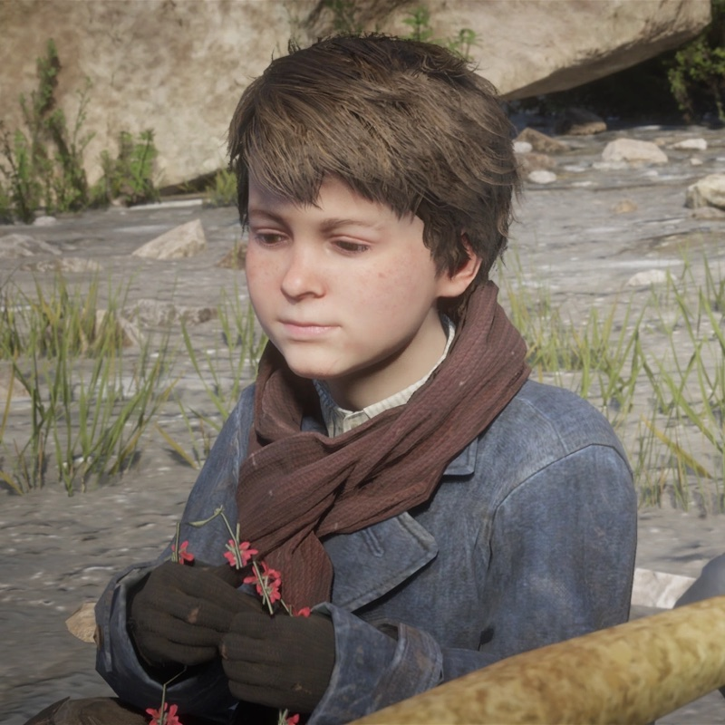
Personnage · Famille Marston
Jack Marston
Jack Marston, crédité sous le nom de John "Jack" Marston Jr., est le fils de John Marston et d'Abigail Marston. C'est un personnage secondaire de Red Dead Redemption 2 (2018) et un personnage central de Red Dead Redemption (2010), dont le joueur termine l'épilogue dans sa peau. Né vers 1895 au sein du gang Van der Linde, il a quatre ans en 1899 quand la famille Braithwaite l'enlève et le livre à Angelo Bronte. En 1907, il s'installe à Beecher's Hope avec ses parents. En 1911, le Bureau of Investigation le retient avec sa mère pour contraindre John à traquer ses anciens compagnons. En 1914, après la mort de John puis celle d'Abigail, il retrouve Edgar Ross et le tue.
Josh Blaylock l'interprète dans Red Dead Redemption et Undead Nightmare ; dans Red Dead Redemption 2, il est joué par Marissa Buccianti (1899) et Ted Sutherland (1907).
- Nom complet
- John "Jack" Marston Jr., selon la notice de Red Dead Redemption
- Naissance
- Vers 1895 ; le Red Dead Wiki déduit l'année de l'âge qu'il donne à Abe, employé du ranch, en 1907 (douze ans)
- Statut
- En vie à la fin de Red Dead Redemption (1914) ; la suite de sa vie n'est pas montrée
- Nationalité
- Américaine
- Affiliation
- Gang Van der Linde (de sa naissance à 1899) ; famille Marston
- Rôle
- Enfant du gang (1899) ; fils de la famille à Beecher's Hope (1907 à 1914) ; personnage jouable de l'épilogue de Red Dead Redemption (1914)
- Famille
- John Marston (père), Abigail Marston (mère), une sœur morte avant 1911 (John l'évoque sans la nommer)
- Jeux
- Red Dead Redemption (aussi personnage jouable en multijoueur avec Liars and Cheats, 2010), Undead Nightmare, Red Dead Redemption 2
- Voix
- Josh Blaylock (Red Dead Redemption, Undead Nightmare) ; Marissa Buccianti (1899) et Ted Sutherland (1907) dans Red Dead Redemption 2
Biographie
Origines
Jack est le fils de John Marston et d'Abigail, tous deux membres de la bande de Van der Linde. C'est Uncle qui a fait entrer Abigail dans la bande, vers 1894, et Jack naît vers 1895. L'année est déduite : d'après le Red Dead Wiki, Jack dit à Abe, un employé du ranch, qu'il a douze ans dans "Simple Pleasures", qui se déroule en 1907, et le wiki en tire 1895 comme année de naissance. Il a donc environ quatre ans en 1899. Les jeux ne précisent pas où il est né. Il voit le jour au sein même de la bande et grandit parmi ses membres. Il appelle les hommes du camp ses oncles.
Son père est absent pendant une partie de sa petite enfance. Alors que Jack n'est encore qu'un bébé, John quitte la bande pendant près d'un an, puis revient. Dutch van der Linde et Hosea Matthews l'accueillent de nouveau, tandis qu'Arthur Morgan lui en garde rancune. En 1899, dans "The Battle of Shady Belle", John reconnaît devant Arthur qu'il s'est mal comporté envers Abigail et l'enfant, et qu'il refusait de croire que Jack était son fils.
Dans les semaines qui précèdent Red Dead Redemption 2, la bande campe près de Blackwater, dans le West Elizabeth. Le braquage d'un ferry y tourne à la fusillade avec des agents de la Pinkerton, et la bande s'enfuit vers le nord, dans les montagnes, avec ses blessés. John fait partie de ceux qui ont reçu une balle. Le jeu ne dit pas où se trouvait Jack pendant le braquage.
Red Dead Redemption 2 (1899)
Chapitre 1 : Colter
"Outlaws from the West" s'ouvre sur les chariots de la bande qui franchissent les Grizzlies en pleine tempête de neige, et Jack fait partie du convoi. La bande se réfugie à Colter, une ville minière abandonnée de l'Ambarino. John n'est pas là : parti en éclaireur, il n'est pas revenu. Dutch et Arthur se rendent dans une ferme voisine, occupée par des O'Driscoll. Une fois la maison nettoyée, Arthur fait remarquer qu'elle est sèche et chauffée, et qu'on pourrait y installer les femmes et Jack. Dutch répond que peut-être, qu'on verra dans quel état sont les autres au retour, mais qu'il ne veut pas que la bande se sépare.
Dans "Enter, Pursued by a Memory", John a disparu depuis deux jours. Abigail demande à Arthur de partir à sa recherche, et Arthur se met en route avec Javier Escuella. Ils retrouvent John sur une corniche, le visage lacéré par des loups, et le ramènent à Colter. Au début de "Who the Hell is Leviticus Cornwall?", Abigail fait entrer Jack dans la cabane où son père est alité, en expliquant à John que le petit voulait le voir. Dutch salue l'enfant. Jack s'approche de son père. Quand John demande à Abigail si elle est venue le voir, elle aussi, elle répond qu'elle espérait trouver un cadavre, et les parents se lancent des piques devant l'enfant ; Dutch prend le parti d'Abigail et traite John d'idiot. Abigail fait ressortir Jack de la cabane.
Jack ne prend aucune part à l'attaque du train de Leviticus Cornwall, menée par Dutch, Arthur et d'autres près de Granite Pass. Une fois la neige partie, la bande quitte les montagnes. Dans "Eastward Bound", on charge les chariots, on installe John, toujours blessé, à l'arrière de l'un d'eux, et la bande file vers l'est, jusqu'à un nouveau camp à Horseshoe Overlook, au-dessus de la ville de Valentine, dans les Heartlands.
Chapitre 2 : Horseshoe Overlook
À Horseshoe Overlook, Jack reste dans les jupes de sa mère et s'aventure rarement hors du camp. Son père garde ses distances, comme le montrent plusieurs scènes de camp. Dans "A Fisher of Men", Abigail demande à Arthur de s'occuper un peu de Jack, qui a le moral en berne après des semaines de bouleversements. Arthur trouve l'enfant en train de jouer et lui propose d'aller pêcher. Jack va chercher la canne que lui a fabriquée l'oncle Hosea, et Arthur l'installe devant lui sur son cheval. En route vers la Dakota River, Arthur lui demande s'il va mieux, lui qui a été un peu malade, et Jack assure que tout va bien. Il raconte qu'il a aimé la neige et demande quand ils retourneront au camp de Blackwater. Arthur lui répond qu'ils n'y retourneront pas, et Jack explique qu'il y a laissé un livre d'histoires. Arthur lui promet qu'on lui en trouvera un autre.
Au bord de l'eau, Arthur montre à Jack comment appâter l'hameçon avec du fromage, lancer d'un coup de poignet et attendre que ça morde, puis il remonte un poisson et lui explique qu'il faut relâcher les petits. Jack demande une pause, part cueillir des fleurs rouges et, une fois rassis, déclare que la pêche, c'est ennuyeux ; il tresse les fleurs en collier pour sa mère. Deux hommes arrivent alors à cheval : les agents Andrew Milton et Edgar Ross, de l'agence Pinkerton. Milton propose à Arthur la liberté en échange de Dutch et déclare avoir tué Mac Callander. Quand Arthur jette sa canne à terre, Ross le met en joue, et Jack se cache derrière Arthur. Avant de partir, Ross lance au petit de profiter de sa pêche tant qu'il le peut encore. C'est la première rencontre de Jack avec Ross.
Sur le chemin du retour, Jack demande qui étaient ces hommes, pourquoi Arthur a menti sur l'endroit où se trouve l'oncle Dutch, et si Mac est en prison. Arthur répond que ce sont des gens désagréables et que la bande est là pour le protéger de ce genre d'individus, puis lui demande s'il a toujours son collier. Jack trouve que la pêche, ça va, mais qu'on attend beaucoup. Au camp, il annonce à sa mère qu'ils ont pris un poisson et lui offre le collier ; Abigail lui demande s'il a bien remercié l'oncle Arthur. Arthur dit à Jack qu'il s'est bien débrouillé, puis file droit vers la tente de Dutch pour lui parler des Pinkerton.
Chapitre 3 : Clemens Point
La bande descend ensuite vers le sud et s'installe à Clemens Point, au bord du lac Flat Iron, en Lemoyne, où un chien errant rejoint le camp ; Dutch le baptise Cain. Dutch et Hosea montent l'une contre l'autre deux familles rivales, les Braithwaite et les Gray ; dans le cadre de cette manœuvre, la bande vole les précieux chevaux des Braithwaite. Le plan s'effondre à Rhodes, où Sean MacGuire est tué dans une embuscade des Gray. Quand Arthur rentre au camp à la fin de "A Short Walk in a Pretty Town", Abigail lui apprend que Jack a disparu. Le jeu ne montre pas l'enlèvement. La bande en conclut que les Braithwaite ont pris l'enfant pour se venger du vol des chevaux.
Dans "Blood Feuds, Ancient and Modern", Dutch, Arthur, Hosea, John, Charles Smith, Bill Williamson, Javier et Lenny Summers chevauchent jusqu'au manoir Braithwaite pour le récupérer, tandis que Micah Bell et Kieran Duffy gardent le camp. La bande abat les hommes de la famille, fouille la maison sans y trouver Jack et l'incendie. Traînée dehors, Catherine Braithwaite avoue que ses fils ont livré l'enfant à Angelo Bronte, un parrain du crime de Saint-Denis, et qu'il se trouve soit en ville, soit sur un bateau pour l'Italie. Le lendemain matin, dans "The Battle of Shady Belle", les Pinkerton se présentent à Clemens Point, et la bande s'installe à Shady Belle, une ancienne maison de plantation abandonnée dans le bayou.
Chapitre 4 : Saint-Denis
Le chapitre s'ouvre à Shady Belle, alors que Jack n'a toujours pas reparu. Dans "Angelo Bronte, A Man of Honor", Dutch, Arthur et John se rendent au manoir de Bronte, à Saint-Denis. En approchant, Arthur prévient qu'un affrontement pourrait coûter la vie à l'enfant ; pour Dutch, c'est en gardant la tête froide qu'ils le récupéreront. Dutch fait chercher Bronte par un garde, présente le trio comme de simples gens de la campagne et gagne la sympathie du parrain. Bronte accepte de rendre Jack en échange d'un service : chasser des pilleurs de tombes du cimetière de la ville. En route, John avoue à Arthur qu'il ne fait aucune confiance à Bronte et revient sur ses manquements de père. Selon Arthur, Bronte comptait se faire payer l'enfant par les Braithwaite ; cette famille éliminée, Jack ne vaut plus rien à ses yeux.
John et Arthur abattent les pilleurs, récupèrent leur butin et se faufilent entre les policiers. Au manoir, Dutch les attend dehors avec Jack. Sur la route de Shady Belle, Jack raconte son séjour chez Bronte : on lui servait des spaghettis, on le baignait régulièrement, on lui avait donné un coffre à jouets, et il a retenu les mots italiens pour "cheval" et "pantoufle". John est content de l'entendre. À Shady Belle, Abigail se précipite vers son fils, et la bande organise une fête pour son retour, au cours de laquelle Javier chante en s'accompagnant à la guitare. Le soir même, John propose à Abigail et à Jack de partager sa chambre et de vivre en famille. Après son retour, Jack passe davantage de temps avec son père, comme le montrent des scènes de camp.
Shady Belle est bientôt attaquée. Dans "Horsemen, Apocalypses", Kieran, disparu pendant la fête de Jack, est renvoyé mort au camp sur un cheval, et les O'Driscoll donnent l'assaut à la maison. Jack se met à l'abri à l'intérieur avec Abigail, Mary-Beth Gaskill, Leopold Strauss et Susan Grimshaw, pendant que les hommes défendent la bâtisse. Jack ne joue aucun rôle dans "Banking, The Old American Art", le braquage de la Lemoyne National Bank. Le coup échoue : Milton abat Hosea dans la rue, Lenny est tué, John est arrêté puis envoyé au pénitencier de Sisika, et Dutch, Arthur, Micah, Bill et Javier s'enfuient à bord d'un navire. D'après le Red Dead Wiki, Abigail, qui participait à la diversion avec Hosea, parvient à regagner le camp par ses propres moyens.
Chapitre 5 : Guarma
Jack reste sur le continent avec sa mère et le reste du camp pendant que les passagers du navire font naufrage sur l'île de Guarma. Ceux qui sont restés quittent Shady Belle pour Lakay, un hameau abandonné du bayou ; Strauss dira plus tard qu'ils doivent surtout leur survie à Sadie Adler. Dans "Fleeting Joy", Arthur, Micah, Javier, Dutch et Bill retrouvent les autres à Lakay ; Abigail apprend à Dutch qu'ils ont repris les corps d'Hosea et de Lenny à la morgue pour les enterrer. La mission ne montre Jack ni pendant les retrouvailles, ni pendant l'attaque des Pinkerton qui suit. Dans "That's Murfree Country", Arthur et Charles chassent les Murfree de Beaver Hollow, une grotte du Roanoke Ridge, et Jack part vers le nord avec le camp.
Chapitre 6 : Beaver Hollow
À Beaver Hollow, la tension est à son comble au camp, et Jack confie aux adultes que les disputes lui font peur. Dans "Visiting Hours", Arthur et Sadie gagnent Sisika en barque, prennent un gardien en otage, obligent la prison à libérer John et le ramènent à Beaver Hollow ; Dutch accueille son retour avec mauvaise humeur. Arthur, qui se sait désormais atteint de tuberculose, peut demander à Sadie, dans "Mrs. Sadie Adler, Widow", d'aider John, Abigail et Jack à quitter la bande le moment venu. Pendant "Our Best Selves", alors que la plupart des hommes attaquent un train de solde de l'armée et que John, touché, tombe du wagon, les hommes de Milton s'emparent d'Abigail à l'extérieur du camp, où elle se trouve avec Tilly Jackson et Jack. Tilly se cache avec l'enfant.
Au début de "Red Dead Redemption", Tilly et Jack croisent la bande sur la route du retour après le train. Tilly explique qu'elle a sauvé Jack et qu'ils se sont cachés tous les deux, mais que Milton a emmené Abigail à Van Horn pour l'embarquer et la faire juger pour meurtre. Micah soutient que sans John, elle ne sert plus que d'appât, et Dutch lui donne raison et repart vers Beaver Hollow avec la plupart des autres. Arthur demande si on va vraiment laisser l'enfant devenir orphelin. Il donne à Tilly un sac d'argent et lui dit d'emmener Jack à Copperhead Landing pour y attendre Abigail et Sadie. Il appelle ensuite Jack, lui demande d'être courageux et lui promet d'aller chercher sa mère, puis part pour Van Horn avec Sadie.
Tilly s'éloigne à cheval avec Jack. Arthur et Sadie délivrent Abigail à Van Horn, où elle abat Milton, puis Sadie l'emmène à Copperhead Landing, où Tilly l'attend avec Jack. John, qui a survécu à sa chute du train, échappe à l'effondrement de la bande à Beaver Hollow et y rejoint sa femme et son fils. Arthur meurt dans les quatre fins du jeu, et la rencontre sur la route est la dernière fois que Jack le voit.
Red Dead Redemption 2 : l'épilogue (1907)
Après Beaver Hollow, les Marston partent pour le Yukon, en pleine ruée vers l'or du Klondike, dans l'espoir d'y gagner de quoi acheter une terre. Ils en reviennent sans avoir fait fortune. Les années suivantes, la famille va d'un endroit à l'autre et reste rarement plus de quelques semaines au même endroit : de 1899 à 1907, Jack vit sur les routes. Une page du journal de John de cette époque note que Jack ne l'aime pas. Quelques mois avant le début de l'épilogue, John tue un homme dans le Roanoke Ridge, et la famille reprend la route, cette fois vers le West Elizabeth.
Épilogue I : Pronghorn Ranch
"The Wheel" s'ouvre sur la famille qui traverse Big Valley en chariot, Jack assis à l'arrière. D'après les anecdotes de la mission, il parle avec ses parents des histoires du roi Arthur et des chevaliers de la Table ronde. La famille fait halte à Strawberry, où John prend un faux nom et un travail de livreur, tandis qu'Abigail trouve un emploi de ménage au cabinet du médecin. À Pronghorn Ranch, John récupère un chariot volé par la bande des Laramie, et le contremaître, Tom Dickens, accepte de donner sa chance à la famille : on leur attribue une petite cabane en bordure de la propriété.
Dans "Simple Pleasures", Abigail et Jack arrivent de Strawberry en chariot, et un employé les aide à décharger. Jack rejoint ensuite son père et le garçon de ferme Abe à l'étable, où John le présente sous un nom d'emprunt ; d'après le Red Dead Wiki, Jack dit à Abe qu'il a douze ans. Après la traite, Abe envoie le père et le fils nettoyer les écuries. Tout en pelletant, John fait remarquer au garçon qu'il est loin du manoir d'Angelo Bronte ; Jack ne s'en souvient pas. John rentre à la cabane et laisse Jack finir les écuries. Dans "Farming, For Beginners", la famille prend son petit déjeuner ensemble.
Dans "Fatherhood, For Beginners", après une journée passée à aider la famille Geddes avec un cheval rétif et une jument qui met bas, John rentre chez lui, et Abigail le convainc d'emmener Jack faire une promenade à cheval. Jack monte un poney prêté par Duncan Geddes, le plus jeune fils du propriétaire. Le père et le fils longent la Little Creek River, et John défie Jack à la course jusqu'à la maison. Le Red Dead Wiki compte Jack parmi les personnages de la mission suivante, "Old Habits", où John se bat avec le chef de la bande des Laramie au ranch jusqu'à ce qu'Abigail l'arrête ; la mission ne donne aucun rôle à Jack, et Abigail reproche à John d'avoir manqué à sa promesse de renoncer à la violence. Dans "Fatherhood, For Idiots", John se plaint que tous ses talents soient ceux d'un criminel. Abigail évoque une terre appelée Beecher's Hope, qu'ils pourraient acheter grâce à un prêt ; John répond qu'un homme recherché ne peut pas en obtenir, et leur dispute bouleverse visiblement Jack.
John emmène ensuite Jack à Strawberry pour récupérer le courrier du ranch et un colis pour Abigail, et lui apprend en chemin à conduire le chariot. À la poste, John est obligé de donner son vrai nom. Au retour, c'est Jack qui tient les rênes. Trois cavaliers les suivent depuis la ville ; John ordonne à Jack de se cacher et affronte les hommes, qui lui demandent s'il a tué un homme dans le Roanoke Ridge, le frère de leur chef. John les abat tous les trois. Quand le chariot repart, Jack aperçoit les corps et s'effondre, en larmes, le souffle court. Selon le choix du joueur, John l'encourage ou le sermonne, puis lui confie qu'il songe à acheter Beecher's Hope. À la cabane, Jack bouscule sa mère et rentre en trombe.
Le Red Dead Wiki fait aussi figurer Jack parmi les personnages de "Jim Milton Rides, Again?", où John part à Hanging Dog Ranch reprendre le bétail volé lors d'un raid de la bande des Laramie et tue son chef ; Jack n'a aucun rôle dans l'action, et Abigail est de nouveau furieuse contre John à son retour. Dans "Motherhood", John reçoit un télégramme de Sadie et rentre à la cabane pour l'annoncer à Abigail. Elle est partie avec Jack. Dans sa lettre, Abigail explique qu'elle aime trop leur fils pour le laisser auprès de John tant qu'il continue de s'attirer des ennuis. Tom Dickens raconte à John qu'il les a vus partir avec leurs bagages. Les mois suivants, John continue de travailler au ranch, puis emprunte de quoi acheter une terre à Beecher's Hope et prouver à Abigail qu'il a changé.
Épilogue II : Beecher's Hope
Jack est absent de la première moitié de la seconde partie de l'épilogue, pendant laquelle John bâtit une maison à Beecher's Hope, dans les Great Plains, avec Uncle et Charles, et écrit à Abigail qu'il a changé et qu'elle lui manque, tout comme le petit. Dans "The Best of Women", Abigail et Jack arrivent au ranch et sont impressionnés par la maison. D'après le Red Dead Wiki, ils amènent un chien, Rufus, auquel Jack s'attache. Dans "Trying Again", John propose une partie de pêche à Jack, resté à la maison avec un livre et Rufus. En descendant vers l'eau, Jack évoque sa sortie de pêche de 1899 avec Arthur et les deux agents venus l'interrompre. D'après une citation reprise par le Red Dead Wiki, il demande à son père, au cours de la mission, s'il aimerait qu'il lui ressemble davantage.
Au ruisseau, le père et le fils pêchent jusqu'à ce que Jack remarque que Rufus s'est éloigné. Ils retrouvent le chien mordu par un serpent, et John aspire le venin de sa patte. À la maison, Jack s'en prend à cette sortie ; John et Abigail lui assurent que Rufus sera sur pied d'ici quelques jours. Au début de "A Really Big Bastard", Jack appelle ses parents sur le perron : Sadie est arrivée. Pendant le déjeuner, Sadie propose à John de chasser des primes avec elle, et Abigail s'y oppose, entre autres à cause du mauvais exemple pour Jack. Elle finit par laisser John accepter, à condition qu'il rentre sain et sauf et qu'il laisse Micah Bell tranquille.
"American Venom" s'ouvre sur Jack qui lit une histoire à voix haute à sa mère et à Uncle : un chevalier, Sir Galsworthy, tue un dragon rouge, sauve une princesse et dépose l'épée pour devenir cultivateur de pommes, sans que ses enfants apprennent jamais qu'il a été le plus brave guerrier du monde. Uncle s'enthousiasme. Sadie arrive alors avec une piste menant à Micah, et John part avec elle et Charles malgré les supplications d'Abigail. Sur le mont Hagen, John tue Micah avec l'aide de Dutch et récupère l'argent de la bande. Quand les trois cavaliers rentrent à Beecher's Hope, Abigail appelle Jack et Uncle dehors, et John lui annonce que tout est fini.
L'argent rembourse le prêt, et le générique de fin montre le mariage de John et d'Abigail, puis le couple qui danse devant la maison. Parmi les scènes qui suivent, on voit Jack jouer avec Rufus, puis le père et le fils brosser ensemble un cheval dans l'enclos, tandis qu'Edgar Ross et Archer Fordham, qui enquêtent sur la mort de Micah, les observent à la jumelle. D'après le Red Dead Wiki, Jack assiste au départ de Charles et de Sadie. Dans la scène qui suit le générique, Abigail somme John de se mettre au travail sur le ranch qui est le sien et d'élever son fils.
Red Dead Redemption (1911)
De 1907 à 1911, les Marston exploitent le ranch de Beecher's Hope, où Uncle vit avec eux. En 1911, John confie à Bonnie MacFarlane qu'il est marié, qu'il a un fils et qu'il a eu une fille, morte depuis ; le jeu n'en dit pas plus sur la sœur de Jack. Cette année-là, des agents du Bureau of Investigation menés par Edgar Ross emmènent Abigail et Jack loin du ranch. Le Bureau les garde pour contraindre John à traquer Bill Williamson, Javier Escuella et Dutch van der Linde. Jack a environ seize ans. Il n'apparaît pas à l'écran avant le retour de John à Beecher's Hope, dans l'acte III.
Acte I : New Austin
John est envoyé dans le New Austin pour capturer Bill à Fort Mercer. Blessé par balle lors de sa première approche, il se remet au MacFarlane's Ranch, puis réunit des alliés, dont le marshal Leigh Johnson. D'après le Red Dead Wiki, John parle de son fils, avant de rentrer chez lui, à plusieurs de ses interlocuteurs, parmi lesquels Leigh Johnson, Luisa Fortuna, Javier et Dutch. Quand Fort Mercer tombe, Bill est déjà parti pour le Mexique.
Acte II : Nuevo Paraíso
Au Mexique, John traque Javier et Bill pendant que le Bureau retient toujours sa famille. Après la capture ou la mort de Javier, Ross et Fordham retrouvent John, et Ross lui transmet les salutations de sa femme. Pendant la poursuite de la diligence, dans "An Appointed Time", Bill crie à John que Jack n'est sans doute même pas son fils. Bill meurt près d'Escalera à la fin de la mission. Jack lui-même n'apparaît pas au Mexique.
Acte III : West Elizabeth
De retour à Blackwater, dans "Bear One Another's Burdens", John demande où sont sa femme et son fils. Avant qu'ils ne repartent, Ross lui assure qu'ils vont bien et qu'il serait bon pour tous les deux que cela continue. Dans "Great Men are Not Always Wise", Dutch demande à John des nouvelles d'Abigail et de son petit garçon ; John répond que le garçon n'est plus si petit, et Dutch suppose qu'il doit avoir quinze ou seize ans. Dans "And The Truth Will Set You Free", John raconte à un capitaine de l'armée que les agents ont menacé de tuer sa femme et son fils s'il ne se lançait pas aux trousses de Dutch. Après la mort de Dutch à Cochinay, Ross prétend d'abord qu'Abigail a été tuée lors d'une émeute en prison, puis dit qu'il plaisantait : Abigail et Jack ont été renvoyés à Beecher's Hope.
Retour à Beecher's Hope
Dans "The Outlaw's Return", John entre dans la cour de Beecher's Hope et appelle sa famille. Après les retrouvailles avec Abigail, Jack s'approche et salue son père d'un "monsieur". Ils s'étreignent, et Jack s'excuse : pendant leur absence, les coyotes ont mangé toutes les poules et des voleurs ont emmené le bétail, malgré ses efforts. John lui répond qu'il le sait. Uncle, censé veiller sur le ranch, insiste pour qu'on ne lui reproche rien. Faute de bétail, John demande à Jack de préparer ses affaires : ils partiront le lendemain matin acheter un troupeau à des amis à lui, au MacFarlane's Ranch, dans le Hennigan's Stead.
En chemin, Jack explique qu'il n'est jamais allé dans le Hennigan's Stead et demande à son père comment il connaît ces éleveurs. Il lui demande si sa maladie était une affection galante, un sujet dont Uncle lui a parlé, ce qui scandalise John. Il veut savoir où son père est passé tout ce temps ; sa mère lui a dit qu'il s'agissait d'affaires importantes pour le gouvernement. Jack raconte que les agents les ont plutôt bien traités, que certains lui racontaient des histoires, et dit qu'il aimerait peut-être devenir un jour fonctionnaire du gouvernement ou homme politique. Il demande si l'absence de John avait un rapport avec Dutch et Bill, dont il entendait sans cesse les noms ; John répond qu'ils sont partis et qu'ils ne les reverront plus. Quand Jack se demande à voix haute ce que cela fait de son père, John se décrit comme un mauvais homme qui a essayé d'être un bon père.
Jack raconte à son père avoir lu dans le journal que l'élevage, c'est fini, et évoque l'idée de devenir homme d'affaires et d'écrire à côté des romans sur l'Ouest d'autrefois. Au MacFarlane's Ranch, Drew MacFarlane les envoie retrouver Bonnie à l'enclos, et John lui présente son fils. Jack mène le troupeau en tête pendant que John le pousse par l'arrière, et Bonnie les accompagne jusqu'à la limite du ranch. Près de chez eux, des voleurs de bétail attaquent le troupeau ; John ordonne à Jack de rester en retrait et les abat. Jack assure qu'il n'a pas eu peur. Ils font entrer les bêtes dans l'enclos, et John félicite son fils et lui promet qu'il fera de lui un éleveur.
Dans "John Marston and Son", John trouve Jack en train de lire sous un arbre. Le livre est un western dans lequel un homme courageux traque l'assassin de son père. John l'emmène chasser le wapiti avec Rufus. En route, il lui demande s'il va bien après ce qui s'est passé ; Jack répond qu'il n'est plus un enfant et lui demande d'arrêter les promesses, qu'il a toutes déjà entendues. Quand John juge invraisemblable une histoire que Jack a lue, le garçon lui demande si elle l'est davantage que celle d'un enfant arraché à sa maison et enfermé dans un cachot. John estime qu'il a trop souvent le nez dans les livres et ajoute qu'il espère qu'il ne s'y cache pas pour fuir le monde réel ; Jack répond qu'il est un peu tard pour ça. John abat un grand mâle et lui montre comment découper la viande, puis Jack tire lui-même des wapitis et en dépèce un, lentement.
À Manzanita Post, John vend la viande pendant que Jack l'attend. Jack proteste qu'il a fait la moitié du travail sans rien toucher, et promet qu'il sera riche un jour. John lui dit qu'il est fier de lui et le remercie d'avoir veillé sur sa mère pendant leur détention ; Jack répond qu'elle sait se défendre et qu'elle a vite remis ces hommes à leur place. De retour au ranch, Jack s'exclame que la chasse était exactement comme dans les livres. Dans "Wolves, Dogs and Sons", John le trouve en train de s'entraîner au fusil et lui propose de corriger sa position. Jack refuse : son père finirait par repartir, il vaut mieux qu'il apprenne seul. Ils partent avec Rufus chasser des loups qui s'en prennent au troupeau.
En chemin, Jack reproche à son père de ne jouer les pères que lorsque cela l'arrange, puis s'excuse et avoue qu'à chaque départ de John, il a peur qu'il ne revienne pas. Il l'interroge sur son grand-père ; John dit l'avoir à peine connu et qu'il est mort dans une bagarre de saloon. Jack demande si Uncle est vraiment l'oncle de John, qui répond que non. Une fois les loups abattus, Jack demande s'il peut chasser seul et se vante de pouvoir tuer un ours ; John lui interdit de quitter la ferme sans sa permission. Jack demande alors si son père était un meurtrier, car un homme, là où on les retenait, l'a traité de meurtrier. Jack plaisante sur l'idée qu'ils pourraient devenir hors-la-loi ensemble ; John répond que cette vie était laide et brutale, et lui demande de ne pas gâcher la sienne.
Dans "Spare the Love, Spoil the Child", Uncle prévient John que le garçon est monté vers le col pour pister un grizzly : à force d'entendre son père raconter ses chasses, il s'est monté la tête. John suit Rufus jusque dans les Tall Trees. À Nekoti Rock, il trouve son fils blessé, caché derrière un rocher, et abat l'ours. D'après le Red Dead Wiki, l'animal a aussi tué le cheval de Jack. Jack monte derrière son père pour rentrer. Quand John lui demande ce qu'il cherchait à prouver, Jack répond qu'il voulait faire ses preuves, que son père n'est jamais là, et qu'il espérait, en faisant quelque chose qui lui plaise, que John ne reparte plus. Il ajoute que, tout petit, il veillait pour écouter Dutch et Bill raconter leurs histoires, et qu'il sait très bien qui est son père.
"The Last Enemy That Shall Be Destroyed" commence dans la grange, où John trouve Jack en train de travailler au tour et le complimente sur son habileté. John lui dit que le ranch sera le sien un jour. Ils plaisantent sur le jour où John Marston arrêterait de tirer, et parlent des machines volantes qui, selon Jack, feront le tour du pays l'année suivante. Uncle aperçoit alors des soldats et des hommes de loi qui avancent vers le ranch. John serre Jack dans ses bras, l'envoie à la maison et lui fait promettre de garder les portes verrouillées et sa mère à l'intérieur. Après la première vague, Jack sort malgré tout sur le perron, fait remarquer combien les assaillants sont nombreux et demande s'ils vont les tuer. John lui répond qu'il ne le permettra pas.
Uncle est touché sur le perron et meurt après avoir demandé à John de mettre Abigail et Jack à l'abri ; Jack hurle d'horreur. John envoie sa femme et son fils seller les chevaux dans la grange, et tous trois y courent sous les balles. D'après le Red Dead Wiki, Jack prend part à la fusillade après la première vague. Dans la grange, John installe Jack et Abigail sur un cheval et leur ordonne de partir sans se retourner et sans s'inquiéter pour lui. Jack proteste que son père vient avec eux ; John promet de les rattraper. Ils s'éloignent, et le joueur prend les commandes de Jack pour le trajet du retour. Quand les coups de feu cessent, Abigail dit à Jack qu'il faut retourner chercher son père. Ils retrouvent John mort devant la grange. Jack et sa mère enterrent John et Uncle sur la colline qui domine le ranch.
Red Dead Redemption : l'épilogue de 1914
Le récit fait un bond de trois ans. Jack, désormais adulte, âgé d'environ dix-neuf ans, se tient devant une tombe fraîche sur la colline de Beecher's Hope : sa mère est morte, et le jeu ne précise pas de quoi. Il l'enterre à côté de John et d'Uncle, coiffe le chapeau de son père et s'éloigne des tombes. Le Red Dead Wiki situe cette période en novembre 1914, d'après un article du Blackwater Ledger annonçant que la Grande-Bretagne est en guerre contre l'Empire ottoman. À partir de là, Jack devient le personnage du joueur. En dehors de la traque de Ross, le jeu laisse sa vie en 1914 à la discrétion du joueur.
Dans "Remember My Family", Jack aborde un agent du gouvernement, Howard Sawicki, à la gare de Blackwater, lui demande s'il a travaillé avec un certain Edgar Ross et dit avoir quelque chose pour lui. Sawicki explique que Ross, couvert de médailles, a pris sa retraite environ un an plus tôt et s'est installé avec sa femme dans une cabane au bord du lac Don Julio. Jack s'y rend et rencontre Emily Ross, à qui il dit devoir remettre une lettre à son mari. Elle se plaint que le Bureau ne laisse pas son mari profiter de sa retraite, s'excuse de s'emporter, puis indique qu'Edgar et son frère Phillip sont partis chasser sur la rive sud de la San Luis River. Jack lui dit de ne pas s'inquiéter pour son mari.
Jack passe au Nuevo Paraíso et trouve Phillip Ross dans un camp de chasse près de Rio del Toro. Il lui parle de la lettre destinée à son frère et dit qu'il rentrera chez lui une fois qu'elle sera remise. Phillip lui apprend qu'Edgar est descendu le long de la rivière chasser le canard, et le met en garde contre le caractère de son frère. Sur la berge, Jack trouve Ross, se présente comme le fils de John Marston et lui annonce qu'il est venu pour lui. Ross éclate de rire et dit qu'il se souvient de son père. Jack l'accuse d'avoir tué John après l'avoir envoyé faire son sale travail. Ross répond que c'est la vie que menait John qui l'a tué, menace d'abattre Jack de la même manière et lui ordonne de partir.
Jack refuse de partir. Ross lâche son arme, et les deux hommes s'affrontent en duel. Jack dégaine le premier et abat Ross, dont le corps tombe dans la rivière. Jack baisse les yeux sur son revolver, le rengaine après un temps et remonte la berge. Le logo du jeu et le générique de fin suivent. Après le générique, le joueur peut continuer à incarner Jack dans le monde ouvert ; le jeu ne montre rien de plus de son histoire.
Undead Nightmare (hors canon)
Undead Nightmare, une extension sortie en 2010, ne fait pas partie du canon de la série. Dans "Love in the Time of Plague", Jack apparaît d'abord à Beecher's Hope, plongé dans un livre, sa mère non loin. John arrive au ranch en chariot, par une nuit d'orage. Uncle n'est pas rentré, et la famille dîne sans lui. Le livre de Jack, explique-t-il à son père, parle d'une malédiction aztèque qui propage une épidémie ; Abigail n'y voit que des sornettes. Pendant la nuit, Uncle revient sous la forme d'un mort-vivant et mord Abigail. Pendant que John s'occupe d'Abigail, on aperçoit Jack qui court après Rufus sans réussir à l'attraper. Il se précipite ensuite au secours de sa mère et se retrouve contaminé à son tour.
John lasse et ligote sa femme et son fils. D'après le Red Dead Wiki, il les installe dans la chambre et leur laisse une assiette de nourriture avant de partir à la recherche d'un remède. La quête de John s'achève dans "A Civilized Man", quand il replace un masque volé sur son autel, dans les catacombes d'Escalera. Dans "On a Pale Horse", il rentre chez lui, trouve sa femme et son fils guéris, quoique toujours entravés, et les serre dans ses bras. Trois mois plus tard, Seth Briars vole de nouveau le masque, et John sort de sa tombe ; l'extension ne montre pas comment il est mort. Un message du jeu explique que sa femme et son fils l'ont enterré avec une flasque d'eau à laquelle il tenait, sans en connaître le pouvoir. Jack n'apparaît plus dans l'extension.
Personnalité
La description officielle publiée par Rockstar le 6 septembre 2018 (version française) : « Le petit Jack a grandi au sein de la bande qui tente de le protéger au mieux des aspects les plus négatifs de leur mode de vie, en particulier sa mère, Abigail. Amoureux de la nature et de la vie sauvage, il est surveillé de près par tous ses oncles et tantes. » Une page de biographie tirée d'un guide officiel, reproduite sur le Red Dead Wiki, précise : "He feels lucky to have such a loving mother and a large family of aunts and uncles to look after him, but wishes that he could spend more time with his father and that there were some other children to play with. Jack is a kind, smart, independent boy who loves everything about nature and the outdoor life" (il se sait chanceux d'avoir une mère si aimante et une grande famille d'oncles et de tantes pour veiller sur lui, mais il aimerait passer plus de temps avec son père et avoir d'autres enfants avec qui jouer ; Jack est un garçon gentil, intelligent et indépendant, qui adore la nature et la vie au grand air).
La lecture l'accompagne à chaque époque. En 1907, il lit des récits de chevaliers et de dragons ; en 1911, John le trouve plongé dans des romans d'aventures ou dans le journal. En 1907, quand son père le provoque, il garde un ton poli : "Noted, sir." (bien noté, monsieur), "I'll try and do better." (je vais essayer de faire mieux), "I must be a disappointment to you." (je dois te décevoir). En 1911, il reproche à John ses longues absences et cherche à gagner son estime, jusqu'à partir seul affronter un grizzly.
Dans "The Outlaw's Return", John le présente à Bonnie MacFarlane avec une remarque sur son âge : "The arrogance of youth. He gets a little fur on his lip and he thinks he knows best all of a sudden" (l'arrogance de la jeunesse ; il a trois poils au menton et, d'un coup, il croit tout savoir). Bonnie répond : "Must take after his father" (il doit tenir de son père).
Personnage jouable en 1914, Jack change de répliques selon le niveau d'honneur du joueur, d'après le Red Dead Wiki. Avec un honneur bas, il se moque des gens qu'il croise et insulte les représentants de la loi, et les prostituées l'éconduisent. Avec un honneur élevé, c'est lui qui les éconduit, par exemple d'un "My ma would turn in her grave" (ma mère se retournerait dans sa tombe). Certaines répliques reviennent sur sa vie : "Go ahead! I got nothin' to live for, anyway!" (vas-y ! de toute façon, je n'ai plus de raison de vivre !) pendant une fusillade, "And I was gonna be a writer." (et dire que je voulais être écrivain) quand il fouille le corps d'une femme. Après un délit, il peut se demander : "What have I become?" (qu'est-ce que je suis devenu ?). Dans "The Prohibitionist", il demande au patron de saloon Oliver Philips ce qu'il y a de mal à appeler Blackwater un "cesspit" (cloaque), et dans "Lights, Camera, Action", il explique à D.S. MacKenna que le cinéma lui fait l'effet de "drivel" (âneries). Le Red Dead Wiki cite aussi ses piques à Billy West dans "Flowers for a Lady" et à Jeb Blankenship dans "Who Are You to Judge?".
Dans ses propres mots
Dans "A Fisher of Men" (1899), quand Arthur lui dit qu'il est courageux, Jack répond : "So just like you" (alors comme toi). Au bord de la rivière, il avoue : "Fishing sure is boring, Uncle Arthur" (la pêche, c'est drôlement ennuyeux, oncle Arthur). Dans "Trying Again" (1907), il demande à son père, dans une réplique que le Red Dead Wiki cite sur sa page : "Do you wish I was more like you?" (tu voudrais que je te ressemble davantage ?). Dans "The Outlaw's Return" (1911), quand John lui demande si les hommes qui ont emmené la famille lui ont fait du mal, il répond : "Ah no, they were okay. Some of them even told me stories. I think I'd like to be a government man someday, or-or a politician." (non, ils étaient corrects ; certains m'ont même raconté des histoires ; je crois que j'aimerais travailler pour le gouvernement un jour, ou être homme politique). Sur le même trajet, quand John lui rappelle qu'il voulait être écrivain : "Well I could be both. A rich industrialist who writes novels about the Old West on the side" (je pourrais être les deux : un riche industriel qui écrit des romans sur le vieil Ouest à côté).
Dans "John Marston and Son", quand John lui demande si les derniers mois ont été durs : "I'm not a kid anymore" (je ne suis plus un gamin). Quand John promet que cela ne se reproduira pas : "Don't make no more promises, Pa. I've heard them all before" (arrête les promesses, papa ; je les ai toutes déjà entendues). Dans "Wolves, Dogs and Sons" : "You can't just decide to be a father when it suits you. What about the rest of the time?" (tu ne peux pas décider d'être un père seulement quand ça t'arrange ; et le reste du temps ?). Sur le chemin du retour, dans "Spare the Love, Spoil the Child", il lance à John : "You think I didn't sit up and listen to Dutch and Bill telling all those stories? You think I don't know who you are?" (tu crois que je ne restais pas debout à écouter Dutch et Bill raconter toutes ces histoires ? tu crois que je ne sais pas qui tu es ?) et "I guess there's only room for one hero in this family" (faut croire qu'il n'y a de place que pour un seul héros dans cette famille).
Noms
La distribution imprimée dans le manuel de Red Dead Redemption le nomme John "Jack" Marston Jr., et l'une de ses répliques de combat en 1914 est "I'm John Marston - Jr." (je suis John Marston, fils). Quand il règle une prime, il peut dire : "Name's Marston. Jack, not John" (je m'appelle Marston ; Jack, pas John). Il se surnomme Jacky dans une réplique de chasse au trésor : "Jacky's gettin' an automobile!" (Jacky va s'offrir une automobile !). Le nom de jeune fille de sa mère est Abigail Roberts. Côté paternel, John décrit son propre père à Bonnie MacFarlane comme "an illiterate Scot, born on the boat into New York" (un Écossais illettré, né sur le bateau qui l'amenait à New York), et le Red Dead Wiki prête à Jack une ascendance écossaise.
Dans "A Fisher of Men" (1899), il parle d'"Uncle Arthur" et d'"Uncle Dutch" (oncle Arthur, oncle Dutch). Le Red Dead Wiki y ajoute oncle Hosea, et dans une scène de camp il parle d'oncle Sean (voir Sean MacGuire). En 1911, il parle de "Mr. Dutch and Bill" (monsieur Dutch et Bill). En 1907, John le surnomme Lancelot, d'après les histoires du roi Arthur qu'il lit, et le présente ainsi à Abe, employé de Pronghorn Ranch. Le Red Dead Wiki en fait son nom d'emprunt au ranch, Lancelot Milton, son père se faisant appeler Jim Milton, mais le signale comme non confirmé.
Le Red Dead Wiki recense d'autres surnoms, tous signalés comme non confirmés : Jackie (pour Abigail), Jackie Boy (pour Sean), Little Jacky Marston (pour Arthur), Cowboy, Gringo, Mr. Mansion et Chicken headed guy.
Apparence
Le portrait du guide, en 1899, le montre avec d'épais cheveux bruns, des yeux marron et des taches de rousseur, en manteau bleu, écharpe rouge sombre et pantalon rapiécé. Le Red Dead Wiki relève qu'il lui manque une dent de devant à quatre ans, et qu'il est le seul protagoniste de la série à avoir des taches de rousseur. En 1911, il ne lui manque plus que quelques centimètres pour égaler son père, selon le même wiki. D'après la page de la mission "Spare the Love, Spoil the Child", il porte, après "The Last Enemy That Shall Be Destroyed", des cicatrices laissées par l'ours. En 1914, il porte les cheveux aux épaules, une moustache et un bouc, ainsi que le chapeau de son père.
Relations

John Marston
En 1899, John tient son fils à distance. À Horseshoe Overlook, Jack lui propose de jouer aux chevaliers (le Red Dead Wiki précise qu'il veut être Achille et que John fasse Hector) ; John répond que ce n'est pas le moment, et Jack s'éloigne, déçu. Après le retour de Jack de la demeure d'Angelo Bronte, John lui apprend à tailler un bâton au couteau, derrière le chariot des femmes, à Shady Belle. Il refuse de lui laisser essayer, de peur de s'attirer de nouveaux ennuis, puis lui donne le bâton et lui tapote la tête. Il dit à Arthur que le petit a du cran ; Arthur répond qu'il tient ça de sa mère. À Beaver Hollow, le père et le fils jouent aux chevaliers ensemble.
Les leçons que John lui donne en 1907 sont détaillées dans la rubrique Compétences ; dans le générique de fin de "American Venom", on le voit montrer à Jack comment brosser un cheval. En 1911, Jack accueille son père d'un "Hello, sir" (bonjour, monsieur) et profite de leurs chevauchées pour l'interroger sur son passé, comme le raconte la biographie, qui couvre aussi la mort de John lors de l'attaque finale et la vengeance de Jack en 1914.

Abigail Marston
En 1899, Jack passe le plus clair de son temps auprès de sa mère. Un jour, à Horseshoe Overlook, il pleure près de la tente de John ; Abigail vient le trouver et lui dit de garder ses larmes pour ceux qui tiennent à lui et de chérir ceux qu'il a, puis Arthur peut lui assurer qu'il peut compter sur lui aussi. Selon le Red Dead Wiki français, après une leçon de lecture avec Hosea, Jack lui annonce qu'il aimerait devenir hors-la-loi, et elle lui répond qu'il sera avocat. Le collier de fleurs qu'il lui fabrique dans "A Fisher of Men", sa capture au chapitre 6, le départ de Pronghorn Ranch en 1907 et l'installation à Beecher's Hope sont racontés dans la biographie.
En 1911, le Bureau retient la mère et le fils ensemble. Dans "Pestilence", Abigail confie à John qu'en regardant Jack elle se dit qu'ils ont été bénis, et qu'il pourra peut-être aller plus loin qu'eux. Dans "Old Friends, New Problems", elle explique à John que le garçon est en colère et qu'il a vu des choses qu'aucun enfant ne devrait voir. L'attaque finale, la mort de John et l'enterrement d'Abigail en 1914 sont racontés dans la biographie.

Uncle
Uncle fait partie du gang auprès duquel Jack grandit, et vit avec la famille à Beecher's Hope à partir de 1907 ; il fait partie de ceux qui écoutent Jack lire à voix haute avant "American Venom". Selon le Red Dead Wiki français, on peut voir Jack, à Beecher's Hope, faire une farce à Uncle pendant qu'il dort. En 1911, Uncle a la charge du ranch pendant que le Bureau retient Jack et Abigail. Jack répète ce qu'Uncle lui apprend : quand John lui demande où il a entendu parler de la chaude-pisse, il répond "Uncle told me about it" (c'est Uncle qui m'en a parlé), et il explique à John que, d'après Uncle, la plupart des bagarres viennent du poker ou des femmes. La page du wiki consacrée à Uncle ajoute qu'Uncle raconte à Jack le jour où il a rossé plusieurs Anglais dans un bar.
Dans "Wolves, Dogs and Sons", Jack demande si Uncle est vraiment l'oncle de John ; John répond que non, et que tout le monde l'a toujours appelé ainsi. Pendant l'attaque finale, Uncle est touché sur le porche ; Jack cesse de tirer, court vers lui et hurle d'horreur. En 1914, certaines répliques de Jack aux prostituées font encore référence à lui : "Uncle warned me about women like you" (Uncle m'a mis en garde contre les femmes comme vous).

Arthur Morgan
Au camp, Jack demande à Arthur le dé à coudre d'Abigail et un penny dreadful (un roman à quatre sous), et le remercie d'un dessin et de barres chocolatées déposés à sa tente. Arthur l'emmène pêcher dans "A Fisher of Men", sortie racontée dans la biographie. Dans "The New South", Hosea rapporte à Arthur que Jack l'a trouvé bon professeur après cette partie de pêche, et qu'il a répondu au garçon qu'il devait le confondre avec quelqu'un d'autre.
Au chapitre 6, Arthur l'envoie à Copperhead Landing avec Tilly avant de partir pour Van Horn ; Jack ne le reverra plus. En 1907, Jack confie à sa mère qu'il se souvient un peu qu'Arthur les a sauvés.

Dutch van der Linde
À Horseshoe Overlook, assis à la table de dominos, Dutch confie à John qu'il a parlé avec Jack et qu'un enfant est le plus beau des cadeaux. John répond qu'il n'est pas sûr que le garçon soit de lui. Dutch, lui, n'en doute pas, et veut savoir pourquoi John le tient à distance ; John assure qu'il ne lui veut aucun mal mais rappelle à Dutch la vie qu'ils mènent, et Dutch rétorque qu'ils vivent libres. Après l'enlèvement, c'est à Dutch que Bronte rend l'enfant (voir la biographie). En 1911, à Blackwater, Dutch demande des nouvelles de son fils à John, dans "Great Men are Not Always Wise".

Hosea Matthews
La canne que Jack emporte à la rivière dans "A Fisher of Men" est un cadeau d'Hosea, qui l'a fabriquée pour lui. Hosea lui donne des leçons de lecture au camp ; Jack trouve ça trop difficile et assure que la lecture ne l'intéresse pas, même quand Arthur lui dit qu'il est content, lui, de savoir lire. Au retour de Jack de la demeure de Bronte, Hosea plaisante en disant qu'il le croyait parti avec un cirque, et lui raconte qu'Abigail était terrifiée. Jack explique qu'il dormait dans un lit, dans une chambre à lui ; Hosea y voit une cage, et Jack répond que c'était plutôt un palais de conte. Hosea le surnomme leur petit prince et lui annonce que les leçons de lecture reprennent dès le lendemain. Hosea demande aussi à Arthur si le gang est un endroit où élever Jack, et conseille à John de s'enfuir avec Abigail et l'enfant.

Sadie Adler
C'est Sadie qui ramène Abigail auprès de Jack à Copperhead Landing, au chapitre 6. En 1907, elle passe à Beecher's Hope, assiste au mariage puis quitte le ranch pour de bon ; ces scènes sont racontées dans la biographie.

Charles Smith
Charles accompagne le gang au manoir Braithwaite pour retrouver Jack, et fait partie de ceux qui parlent du retour de l'enfant pendant la fête de Shady Belle. En 1907, il aide John à bâtir la maison de Beecher's Hope, où Jack vient vivre avec ses parents. Il assiste au mariage, et Jack est présent quand il fait ses adieux à la famille.

Edgar Ross
Ross adresse pour la première fois la parole à Jack dans "A Fisher of Men" (1899), quand Milton et lui trouvent Arthur et le garçon au bord de la rivière. En 1907, il observe la famille de loin dans le générique de fin de "American Venom". En 1911, son Bureau retient Jack et Abigail pour obliger John à traquer ses anciens compagnons, et il mène l'attaque où John trouve la mort. Jack l'abat en duel en 1914.

Archer Fordham
Fordham est le collègue de Ross au Bureau. Il se tient à ses côtés dans le générique de fin de "American Venom", quand les deux hommes observent John et Jack à Beecher's Hope, et le retrouve en 1911, quand le Bureau retient Jack et Abigail.

Bonnie MacFarlane
Jack fait la connaissance de Bonnie dans "The Outlaw's Return", quand John et lui achètent du bétail au ranch des MacFarlane. John lui explique que les MacFarlane l'ont soigné quand il était malade, et lui dit de saluer mademoiselle MacFarlane, ce que Jack fait.

Tilly Jackson
Tilly se cache avec Jack pendant qu'Abigail est enlevée lors de l'assaut contre Beaver Hollow, puis veille sur lui à Copperhead Landing jusqu'au retour de sa mère (voir la biographie).

Karen Jones
Pendant la disparition de Jack, Karen reste auprès d'Abigail, qui pleure sur le lit de John à Shady Belle, et lui assure que personne ne fera de mal à l'enfant. Elle fait partie de ceux qui, autour du feu, fêtent le retour de Jack.

Mary-Beth Gaskill
Mary-Beth est autour du feu avec Dutch, Hosea, John, Abigail et les autres quand le gang accueille Jack à Shady Belle, après la chanson de Javier.

Susan Grimshaw
À Beaver Hollow, alors que Jack fait le tour du camp en appelant Cain, le chien disparu, il demande à Mlle Grimshaw si elle l'a vu. Elle répond que non, mais lui assure que c'est un vagabond et qu'il finira par revenir.

Simon Pearson
Pendant la disparition de Jack, à Shady Belle, Abigail trouve Pearson en train de fumer sur le ponton et lui demande où est son fils. Pearson répond que le garçon est malin et qu'il revient toujours. Plus tard, il demande à Arthur qui pourrait reprocher à Jack de s'être sauvé, et Arthur en convient.

Micah Bell
À Horseshoe Overlook, Micah, attablé, propose un dollar à Jack pour qu'il aille poser à Arthur une question grossière sur lui-même. Le garçon se dérobe, et si Arthur est dans les parages, il peut sommer Micah de le laisser tranquille. À Beaver Hollow, Micah interrompt une partie de chevaliers entre le père et le fils pour dire à Jack que Dutch a cru John fait d'or avant de découvrir qu'il n'était qu'un lâche ; John lui ordonne de laisser Jack en paix. Quand Jack cherche Cain dans tout le camp, Micah lui lance que le chien ne reviendra pas et lui crie de déguerpir.
Après la capture d'Abigail au chapitre 6, Micah plaide devant Jack pour qu'on l'abandonne, puis s'interrompt et s'excuse auprès du garçon. Sur le mont Hagen, en 1907, il menace John de rendre visite à Abigail et à Jack.

Bill Williamson
Bill participe à l'assaut du manoir Braithwaite pour récupérer Jack et parle du retour de l'enfant pendant la fête de Shady Belle. En 1911, Abigail ne sait que répondre quand Jack l'interroge sur "Uncle Bill" et "Uncle Dutch" (oncle Bill et oncle Dutch). À Escalera, dans "An Appointed Time", Bill crie à John que Jack n'est sans doute même pas son fils.

Javier Escuella
Javier fait partie de l'expédition au manoir Braithwaite pour récupérer Jack. À la fête de Shady Belle donnée pour son retour, il chante près du feu "Cielito Lindo", une chanson mexicaine écrite en 1882 par Quirino Mendoza y Cortés, et le gang accueille Jack à la fin de la chanson. En 1911, le Bureau retient Jack et Abigail pour obliger John à livrer ses anciens compagnons, dont Javier.

Lenny Summers
Lenny fait partie des membres du gang qui chevauchent jusqu'au manoir Braithwaite dans "Blood Feuds, Ancient and Modern" pour retrouver Jack, et il est autour du feu quand le gang fête le retour de l'enfant à Shady Belle.

Kieran Duffy
À Horseshoe Overlook, Jack lance des cailloux sur Kieran pendant qu'il brosse un cheval. Quand sa mère lui demande pourquoi, il répond que Kieran est un O'Driscoll et qu'elle lui a toujours dit qu'ils étaient méchants ; Abigail l'arrête, et Arthur peut le féliciter pour son lancer. Après l'enlèvement, Kieran vient s'excuser auprès d'Abigail : il avait vu les Braithwaite approcher du camp sans deviner qu'ils en voulaient à Jack, et il assure qu'il donnerait volontiers sa vie pour celle de l'enfant.

Sean MacGuire
Jack ne participe pas à la fête donnée pour le retour de Sean au camp, mais confie à Arthur à quel point il est heureux de revoir oncle Sean. Dans une autre scène, tous deux tombent sur un lapin blanc près du camp. Sean y voit un signe magique, sans savoir de quoi ; Arthur lui dit de le dépecer, et une fois que Jack lui a fait ses adieux, l'animal finit dans le ragoût de Pearson. Sean est tué à Rhodes juste avant l'enlèvement de Jack.

Orville Swanson
À Colter, Swanson reste au camp avec les femmes, Jack et les autres pendant que les hommes s'absentent. Si Arthur a un honneur bas ou n'a pas terminé "Of Men and Angels", Swanson lui fait ses adieux à Emerald Station et raconte qu'il a tenté de convaincre les femmes et Jack de partir avec lui, mais qu'ils ont refusé.

Catherine Braithwaite
Sa famille enlève Jack pour se venger du vol de ses chevaux, et c'est Catherine qui révèle au gang que ses fils l'ont livré à Angelo Bronte (voir la biographie).

Angelo Bronte
Bronte garde Jack dans sa demeure de Saint-Denis jusqu'à ce qu'il le rende à Dutch, dans "Angelo Bronte, A Man of Honor". Selon le Red Dead Wiki français, Jack l'appelle papa Bronte.
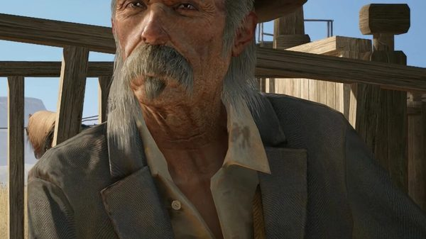
Landon Ricketts
Jack ne croise jamais Ricketts à l'écran, mais ses répliques de 1914 le citent, notamment après un tir en Dead Eye : "Landon Ricketts, eat your heart out" (Landon Ricketts peut aller se rhabiller).
Rufus
Rufus est le chien de la famille en 1907 et en 1911 ; Abigail et Jack l'amènent à Beecher's Hope. C'est Jack qui s'aperçoit de sa disparition dans "Trying Again" (voir la biographie). En 1911, Rufus accompagne Jack et John à la chasse, et conduit John jusqu'à Nekoti Rock quand le grizzly attaque Jack. En 1914, si Jack tue un chien, il peut dire : "I guess I just miss Rufus" (faut croire que Rufus me manque).
Cain
Derrière la tente de Dutch, à Clemens Point, Jack et Dutch tombent sur un Catahoula Cur errant. Le garçon veut le garder ; Dutch accepte volontiers, le baptise Cain et invente pour l'enfant une histoire où le chien, comme le gang, est en cavale. Cain disparaît avant l'installation du gang à Beaver Hollow (voir Micah Bell).
Compétences, armes et chevaux
Ce qu'il apprend
Jack apprend à lire enfant : Hosea lui donne des leçons au camp en 1899 (voir les relations), et en 1911 ses parents l'encouragent à lire, comme il le rappelle à John dans "John Marston and Son". Selon le Red Dead Wiki français, il a essayé de convaincre sa mère, qui ne sait pas lire, de s'y mettre elle aussi, mais elle a vite renoncé. Sa première partie de pêche, il la fait avec Arthur en 1899 (voir les relations) ; en 1907, il pêche avec John. Cette année-là, John lui apprend aussi à monter, sur un poney prêté par Duncan Geddes, et à mener un chariot, leçon donnée en route vers Strawberry ; au retour, c'est Jack qui tient les rênes.
En 1911, il mène le troupeau ramené du ranch des MacFarlane pendant que John le pousse par l'arrière, dans "The Outlaw's Return". Dans "John Marston and Son", il abat un wapiti, le dépèce après avoir regardé faire son père et l'accompagne à Manzanita Post pour vendre la viande. Dans "Wolves, Dogs and Sons", il s'entraîne seul au fusil. Juste avant l'attaque finale, John le trouve au tour à bois, dans la grange, et lui dit qu'il est doué de ses mains.
Jouabilité dans Red Dead Redemption
De "The Outlaw's Return" à "The Last Enemy That Shall Be Destroyed", Jack vit à Beecher's Hope comme personnage non jouable. Le Red Dead Wiki décrit son quotidien : une Repeater Carbine entre les mains dans la journée, l'harmonica au coin de la cheminée une fois la nuit tombée. Le joueur prend les commandes de Jack, alors âgé de seize ans, à la fin de "The Last Enemy That Shall Be Destroyed", le temps de revenir au ranch. D'après la page de la mission, il peut alors descendre de cheval, courir avec une animation qui lui est propre, fouiller les corps des soldats et consommer ce qu'il trouve, gnôle ou tabac à chiquer, avec les répliques de sa version adulte pendant la fouille. Il peut éperonner sa monture sans être désarçonné, et la mission échoue s'il s'éloigne de la zone, d'Abigail ou du cheval. Dès lors, il reste le personnage jouable jusqu'à la fin du jeu.
Ce qu'il reprend de John : armes, planques, honneur, réputation, primes, tenues, et la progression dans la plupart des missions d'inconnus, que Jack joue avec des répliques enregistrées pour lui. Le cheval de John suit aussi, sauf si le joueur garde le Lusitanien de Jack, selon le Red Dead Wiki. Ce qui change : "I Know You", la mission d'inconnu consacrée au passé de son père, ne peut être ni lancée ni poursuivie, et "Remember My Family" la remplace. Jack dispose du Dead Eye et de la plupart des animations de John, mais pas de cris ni de grognements propres : chutes et blessures reprennent la voix de John ou celles de personnages anonymes. Comme son père, il ne sait pas nager. Sa version de la Cowboy Outfit comporte une veste beige, et il peut porter trois uniformes que John n'a aucun moyen légal d'obtenir : US Army Uniform, US Marshal Uniform et Bureau Uniform. La chasse aux primes lui reste ouverte, et la liste de citations du wiki lui prête des répliques pour interpeller les hommes recherchés, comme Sergio Abelda ou Americus Roe. Selon le Red Dead Wiki, un code de triche permet de jouer Jack adulte avant la dernière mission, au prix du blocage des missions de l'histoire et de la sauvegarde automatique.
Armes et chevaux
Le Red Dead Wiki lui attribue un Hunting Knife, une Repeater Carbine et un Bolt Action Rifle, en plus des armes que le joueur lui confie en 1914. En 1907, il monte un poney que le wiki identifie comme un Morgan. En 1911, le wiki lui prête un Standardbred Pinto et un Standardbred pie selon les missions ; son cheval est tué par le grizzly de Nekoti Rock dans "Spare the Love, Spoil the Child". Un Lusitanien est la récompense de "The Last Enemy That Shall Be Destroyed" et sa monture par défaut quand il devient le personnage jouable.
Missions
Le Red Dead Wiki anglais recense pour Jack 22 missions principales de Red Dead Redemption 2, de l'arrivée à Colter jusqu'au mariage à Beecher's Hope, six missions de Red Dead Redemption et deux d'Undead Nightmare. L'édition française compte 20 missions pour Red Dead Redemption 2 : elle omet "The Best of Women" et "A Really Big Bastard". Pour Red Dead Redemption, elle omet "Spare the Love, Spoil the Child" et "Remember My Family", et ajoute une mission où Jack n'est que cité. Jack est absent de "Blood Feuds, Ancient and Modern" et de "The Battle of Shady Belle", qui suivent son enlèvement, et aucune des deux listes ne les retient. Le tableau ci-dessous ajoute "Who is Not Without Sin", dont la transcription lui prête une réplique.
Red Dead Redemption 2, chapitres 1 à 6
| Mission | Chapitre | Rôle de Jack |
|---|---|---|
| Outlaws from the West | 1. Colter | Fait route avec le gang dans la neige après Blackwater. Dans la ferme qu'Arthur et Dutch viennent de reprendre aux O'Driscoll, Arthur propose d'y installer les femmes et Jack ; Dutch préfère ne pas diviser le gang. La page de la mission ne lui attribue aucune action propre. |
| Enter, Pursued by a Memory | 1. Colter | Citée par le wiki. Ni la page de la mission ni sa transcription ne le mentionnent. |
| Who the Hell is Leviticus Cornwall? | 1. Colter | Abigail l'amène dans la cabane parce qu'il voulait voir son père, blessé et alité. Dutch le salue, il s'approche de John, puis Abigail le ramène dehors après avoir échangé des piques avec John. |
| A Fisher of Men | 2. Horseshoe Overlook | À la demande d'Abigail, Arthur l'emmène pêcher sur la Dakota River avec la canne qu'Hosea lui a fabriquée. Il parle du livre d'histoires oublié au camp de Blackwater, tresse un collier de fleurs pour sa mère et assiste à la confrontation entre Arthur, Milton et Ross. De retour au camp, il offre le collier à Abigail. |
| Who is Not Without Sin | 2. Horseshoe Overlook | Absente de la liste du wiki. Si Arthur passe devant lui au camp en portant Swanson, ivre, Jack demande si le révérend dort. |
| Angelo Bronte, a Man of Honor | 4. Saint-Denis | Livré à Angelo Bronte par les Braithwaite, il est rendu à Dutch pendant qu'Arthur et John débarrassent le cimetière de Saint-Denis de ses pilleurs de tombes. Sur le chemin du retour, il parle de son séjour avec plaisir. Le soir même, le gang fait la fête à Shady Belle pour son retour. |
| Horsemen, Apocalypses | 4. Saint-Denis | Se met à l'abri dans la maison de Shady Belle avec Abigail, Mary-Beth, Strauss et Susan quand les O'Driscoll attaquent le camp. |
| Fleeting Joy | 5. Guarma | Citée par le wiki, mais la page de la mission relève que Jack, Mary-Beth et Karen ne sont pas visibles au repaire de Lakay pendant la mission. |
| That's Murfree Country | 5. Guarma | Citée par le wiki pour l'installation du gang à Beaver Hollow. La page de la mission ne lui attribue aucune action propre. |
| Visiting Hours | 6. Beaver Hollow | Citée par le wiki. La page de la mission ne le mentionne pas. |
| Red Dead Redemption | 6. Beaver Hollow | Tilly s'est cachée avec lui quand les hommes de Milton ont emmené Abigail. Tous deux croisent le gang au retour de l'attaque du train. Arthur remet à Tilly un sac d'argent, lui demande d'attendre Abigail et Sadie à Copperhead Landing avec Jack, et dit au revoir au garçon avant de partir pour Van Horn. |
Red Dead Redemption 2, épilogue
Jack est absent de Beecher's Hope pendant les premières missions du second épilogue. Uncle évoque son départ avec Abigail dans "Home Improvement for Beginners", et la lettre de John, dans "A New Jerusalem", dit qu'ils lui manquent tous les deux. Aucune de ces missions ne le montre.
| Mission | Partie | Rôle de Jack |
|---|---|---|
| The Wheel | Épilogue 1 : Pronghorn Ranch | Voyage à l'arrière du chariot familial dans Big Valley et parle avec ses parents du roi Arthur et des chevaliers de la Table ronde. La famille prend la direction de Strawberry. |
| Simple Pleasures | Épilogue 1 : Pronghorn Ranch | Arrive de Strawberry à Pronghorn Ranch avec Abigail. Il rejoint John et le garçon de ferme Abe à l'étable, puis aide à nettoyer les écuries. Quand John évoque le manoir de Bronte, Jack ne s'en souvient pas. |
| Farming, For Beginners | Épilogue 1 : Pronghorn Ranch | Prend le petit déjeuner avec ses parents le matin où Abigail annonce son travail chez le médecin. |
| Fatherhood, For Beginners | Épilogue 1 : Pronghorn Ranch | Chevauche le long de la Little Creek River avec John, sur un poney prêté par Duncan Geddes. John le défie à la course jusqu'à la maison. Le poney peut le désarçonner si le joueur ne lui dit pas d'accélérer. |
| Fatherhood, For Idiots | Épilogue 1 : Pronghorn Ranch | Assiste à la dispute de ses parents au sujet d'un prêt bancaire. Il part avec John à Strawberry, apprend en chemin à conduire le chariot, puis le ramène lui-même. Quand trois cavaliers les prennent en chasse, il se cache pendant que John les abat. À la vue des corps, il fond en larmes, et de retour à la cabane, il bouscule sa mère. |
| Old Habits | Épilogue 1 : Pronghorn Ranch | Citée par le wiki. La page de la mission ne le mentionne pas. |
| Jim Milton Rides, Again? | Épilogue 1 : Pronghorn Ranch | Citée par le wiki. La page de la mission ne le mentionne pas. |
| Motherhood | Épilogue 1 : Pronghorn Ranch | Absent : Abigail a quitté Pronghorn Ranch avec lui. Le contremaître Tom Dickens dit à John les avoir vus partir tous les deux avec leurs bagages. |
| The Best of Women | Épilogue 2 : Beecher's Hope | Une seule cinématique : il arrive à Beecher's Hope avec Abigail après des mois loin de John. |
| Trying Again | Épilogue 2 : Beecher's Hope | Donneur de mission. John le trouve en train de lire et de jouer avec le chien Rufus, et l'emmène pêcher. En chemin, Jack se souvient de sa partie de pêche avec Arthur. Rufus se fait mordre par un serpent, John aspire le venin, et ses parents lui assurent que le chien sera remis dans quelques jours. |
| A Really Big Bastard | Épilogue 2 : Beecher's Hope | Appelle ses parents sur le perron quand Sadie arrive au ranch. |
| American Venom | Épilogue 2 : Beecher's Hope | Avant la mission, il lit à voix haute à Abigail et à Uncle une histoire du chevalier Sir Galsworthy. Abigail l'appelle dehors avec Uncle au retour de John. Pendant le générique, il assiste au mariage de ses parents à côté d'Uncle, voit partir Charles, joue avec Rufus et brosse un cheval avec John dans l'enclos, sous les jumelles de Ross et d'Archer Fordham. |
Red Dead Redemption 2 : autres activités
| Activité | Chapitre | Rôle de Jack |
|---|---|---|
| Errand Boy | 2. Horseshoe Overlook | Deux demandes adressées à Arthur : un roman Penny Dreadful, qu'il évoque pendant "A Fisher of Men" et qui se trouve à l'un de cinq endroits (Osman Grove, Clawson's Rest, l'école abandonnée de Pleasance, Downes Ranch ou le lac Don Julio), puis, une fois cette mission terminée, un dé à coudre pour remplacer celui d'Abigail, qu'il a perdu. |
Red Dead Redemption, 1911
Le Bureau retient Jack et Abigail pendant l'essentiel du jeu. Jusqu'au retour de John chez lui, à l'acte III, Jack n'est que cité : dans les conversations de John, et dans la provocation que lui lance Bill pendant la poursuite de "An Appointed Time". Il donne quatre des missions de Beecher's Hope, la série "Jack Marston", de "John Marston and Son" à "The Last Enemy That Shall Be Destroyed".
| Mission | Acte | Rôle de Jack |
|---|---|---|
| The Outlaw's Return | Acte III : West Elizabeth | Première mission où il apparaît à l'écran. Il accueille John au ranch et s'excuse pour les poules et le bétail perdus. Le lendemain matin, il l'accompagne au MacFarlane's Ranch, à Hennigan's Stead, en le pressant de questions. Bonnie MacFarlane les aide à sortir le bétail de son ranch. Jack mène le troupeau jusqu'à la maison ; quand des voleurs de bétail attaquent, John lui dit de rester en arrière et les abat. |
| John Marston and Son | Acte III : West Elizabeth | Donneur de mission. John le trouve en train de lire un roman d'aventures sous un arbre et l'emmène chasser le wapiti avec Rufus. Jack abat et dépèce lui-même un wapiti, et ils vendent la viande à Manzanita Post. |
| Wolves, Dogs and Sons | Acte III : West Elizabeth | Donneur de mission. John le surprend à s'entraîner avec une Repeater Carbine et lui propose son aide, que Jack refuse. Ils partent avec Rufus et abattent une meute de loups qui menace le troupeau. En chemin, Jack interroge John sur son propre père, sur Uncle, et lui demande s'il a été un meurtrier. |
| Spare the Love, Spoil the Child | Acte III : West Elizabeth | Donneur de mission. Il part seul chasser un grizzly. Uncle prévient John, qui suit Rufus jusqu'à Nekoti Rock et trouve Jack blessé, son cheval tué. John abat l'ours et le ramène à la maison ; ils se disputent en chemin. |
| The Last Enemy That Shall Be Destroyed | Acte III : West Elizabeth | Donneur de mission. John le trouve au tour à bois, dans la grange. À l'arrivée de l'armée, John l'envoie dans la maison, mais Jack ressort avec un fusil et se bat aux côtés de John et d'Uncle. Après la mort d'Uncle, il court jusqu'à la grange avec Abigail et s'enfuit à cheval avec elle. Le joueur le dirige ensuite sur le chemin du retour, et ils trouvent John mort. |
Red Dead Redemption, 1914
Jack est désormais le personnage jouable (voir les compétences pour ce qu'il reprend de John).
| Mission | Partie | Rôle de Jack |
|---|---|---|
| Remember My Family | Épilogue (1914) | Protagoniste. Mission d'inconnu confiée à Blackwater par l'agent du Bureau Howard Sawicki, qui lui apprend que Ross a pris sa retraite près du lac Don Julio. Emily, la femme de Ross, envoie Jack vers son beau-frère Phillip, près de Rio del Toro, qui l'oriente vers l'aval de la San Luis River. Jack y affronte Ross et le tue en duel. Le générique suit. |
Undead Nightmare (hors continuité)
Undead Nightmare se déroule hors de la continuité de la série. Les deux missions retenues par le wiki se passent à Beecher's Hope.
| Mission | Jeu | Rôle de Jack |
|---|---|---|
| Love in the Time of Plague | Undead Nightmare | À la maison, il explique à John que son livre parle d'une malédiction aztèque qui répand une épidémie. Dans la nuit, après qu'Uncle, devenu mort-vivant, a mordu Abigail, il se précipite à son secours et se fait contaminer à son tour. Il court après Rufus avant que John ne le ligote et le laisse dans la chambre avec Abigail et de quoi manger. |
| On a Pale Horse | Undead Nightmare | John retrouve sa femme et son fils guéris, quoique toujours attachés, et les serre dans ses bras. |
Personnages notables tués par Jack
Le Red Dead Wiki n'attribue qu'un seul meurtre à Jack. Dans "The Last Enemy That Shall Be Destroyed", il tire aussi sur les soldats anonymes qui attaquent le ranch, et la page de la mission précise qu'il abat l'un de leurs chevaux. Dans "Remember My Family", le joueur peut également tuer la femme et le frère de Ross ; cela coûte de l'honneur, sauf si Jack porte le bandana, et la mort de Ross rend l'honneur perdu.
| Nom | Mission | Circonstances |
|---|---|---|
| Edgar Ross | Remember My Family | Histoire. Abattu en duel sur la rive de la San Luis River, en 1914. Le duel exige un tir mortel : viser l'arme ou le bras de Ross le fait perdre. |
| Emily Ross | Remember My Family | Facultatif. Peut être tuée après avoir indiqué à Jack où se trouve son mari. |
| Phillip Ross | Remember My Family | Facultatif. Peut être tué après avoir orienté Jack vers l'aval de la rivière. |
Citations
Les répliques ci-dessous sont reproduites telles qu'elles sont prononcées dans le jeu, en anglais, avec la mission et la personne à qui elles s'adressent. Les répliques de mission sont vérifiées sur les transcriptions du Red Dead Wiki. Celles de l'exploration libre de 1914 et du camp dans Red Dead Redemption 2 proviennent de la liste de citations du wiki, qui ne leur rattache aucune mission. Le wiki ne propose aucune transcription des répliques de Jack dans Undead Nightmare. Les répliques déjà citées dans la rubrique Personnalité ne sont pas reprises ici.
Red Dead Redemption 2, chapitre 2
I forgot a story book there. We left so quick.
A Fisher of Men (RDR2, chapitre 2), à Arthur, qui lui demande pourquoi il veut retourner au camp près de Blackwater. Traduction : « J'ai oublié un livre d'histoires là-bas. On est partis tellement vite. »Why did you lie about where Uncle Dutch is?
A Fisher of Men (RDR2, chapitre 2), à Arthur, sur le chemin du retour, après le départ de Milton et de Ross. Traduction : « Pourquoi tu as menti sur l'endroit où est oncle Dutch ? »Great, we caught a fish... And I made you this necklace.
A Fisher of Men (RDR2, chapitre 2), à Abigail, qui demande comment s'est passée la sortie. Traduction : « Super, on a attrapé un poisson... Et je t'ai fait ce collier. »
Red Dead Redemption 2, épilogue
So... with the red dragon dead... and Princess Brea rescued, Sir Galsworthy put down his sword and-a took up his plough... He became the greatest apple farmer in the kingdom.
American Venom (RDR2, épilogue 2), en lisant à voix haute pour Abigail et Uncle, au moment où John entre dans la maison. Traduction : « Alors... une fois le dragon rouge mort... et la princesse Brea délivrée, Sir Galsworthy posa son épée et prit sa charrue... Il devint le plus grand cultivateur de pommes du royaume. »
Red Dead Redemption 2, répliques au camp
La liste de citations classe ces répliques selon l'âge de Jack et l'action du joueur, sans préciser la mission. La première est prononcée par l'enfant de 1899 quand Arthur le provoque, la deuxième quand Arthur apaise l'échange ; la dernière par le garçon de 1907.
I hate you, Uncle Arthur!
Red Dead Redemption 2, 1899, quand Arthur le provoque (liste de citations du wiki). Traduction : « Je te déteste, oncle Arthur ! »Arthur's being mean to me!
Red Dead Redemption 2, 1899, quand Arthur apaise la situation (liste de citations du wiki). Traduction : « Arthur est méchant avec moi ! »You okay sir? You don't normally dress like that.
Red Dead Redemption 2, 1907, quand John porte une tenue inhabituelle (liste de citations du wiki). Traduction : « Ça va, monsieur ? D'habitude, vous ne vous habillez pas comme ça. »
Red Dead Redemption, acte III
Coyotes ate all the chickens and, poachers took the cattle. I tried, father, I tried.
The Outlaw's Return (RDR1, acte III), à John, qui lui demande comment il va. Traduction : « Les coyotes ont mangé toutes les poules et les braconniers ont pris le bétail. J'ai essayé, père, j'ai essayé. »I don't often get a chance to ask them. Was it a gentleman's complaint? What do they call it, the morning drip?
The Outlaw's Return (RDR1, acte III), à John, qui dit avoir été malade et trouve que Jack pose beaucoup de questions ; Jack ajoute que c'est Uncle qui lui en a parlé. Traduction : « Je n'ai pas souvent l'occasion d'en poser. C'était une maladie de gentleman ? Comment on appelle ça, la goutte du matin ? »I've never seen you herd anything, Pa. Apart from the odd pack of drunks.
The Outlaw's Return (RDR1, acte III), à John, qui lui demande s'il est prêt à apprendre à mener le bétail. Traduction : « Je ne t'ai jamais vu mener quoi que ce soit, papa. À part une bande d'ivrognes de temps en temps. »No, I'm fine-I'm fine. I-I wasn't scared. Honest.
The Outlaw's Return (RDR1, acte III), à John, après la mort des voleurs de bétail. Traduction : « Non, ça va, ça va. Je... je n'ai pas eu peur. C'est vrai. »It's an adventure, sir. Set out in the West, and it tells this amazing story about how people killed the savage redskins and how this man, this brave man, hunts the man who killed his father.
John Marston and Son (RDR1, acte III), à John, qui lui demande de quoi parle son livre. Traduction : « C'est une aventure, monsieur. Ça se passe dans l'Ouest, et ça raconte une histoire incroyable, comment des gens ont tué les sauvages peaux-rouges et comment un homme, un homme courageux, traque celui qui a tué son père. »Taller than a boy being taken from his home and locked up in a dungeon?
John Marston and Son (RDR1, acte III), à John, qui trouve invraisemblable son histoire de fillette élevée par des loups. Traduction : « Plus invraisemblable qu'un garçon arraché à sa maison et enfermé dans un cachot ? »What do you mean, "get" old. You are old.
John Marston and Son (RDR1, acte III), à John, qui espère que Jack s'occupera de ses parents quand ils seront vieux. Traduction : « Comment ça, "quand" vous serez vieux ? Tu es vieux. »You'll show me and you'll just...run off again or something. It's better I teach myself.
Wolves, Dogs and Sons (RDR1, acte III), à John, qui propose de lui montrer comment tenir le fusil. Traduction : « Tu vas me montrer et puis tu vas... repartir, ou je ne sais quoi. Mieux vaut que j'apprenne tout seul. »Just imagine it though! John and Jack Marston, most wanted men in the West!
Wolves, Dogs and Sons (RDR1, acte III), à John, sur le chemin du retour ; John lui demande ce qu'il fait de sa mère, puis lui dit qu'il vit dans un monde de rêve. Traduction : « Imagine un peu ! John et Jack Marston, les hommes les plus recherchés de l'Ouest ! »I was trying to prove myself.
Spare the Love, Spoil the Child (RDR1, acte III), à John, qui répond "Prove what? By gettin' yourself killed?" (prouver quoi ? en te faisant tuer ?), sur le chemin du retour. Traduction : « J'essayais de faire mes preuves. »Yeah, maybe I'll do that..."The day John Marston stopped shooting."
The Last Enemy That Shall Be Destroyed (RDR1, acte III), à John, qui lui suggère de le mettre dans un de ses livres s'il trouve un jour quelque chose qu'il n'aime pas abattre. Traduction : « Ouais, je le ferai peut-être... "Le jour où John Marston arrêta de tirer." »No! Uncle! Please! Oh my God! They killed him!
The Last Enemy That Shall Be Destroyed (RDR1, acte III), sur le perron, à la mort d'Uncle. Traduction : « Non ! Uncle ! Je vous en prie ! Mon Dieu ! Ils l'ont tué ! »You're coming with us, Pa.
The Last Enemy That Shall Be Destroyed (RDR1, acte III), à John, dans la grange, quand John le met à cheval. Traduction : « Tu viens avec nous, papa. »
Red Dead Redemption, 1914
Did you work with a man named Edgar Ross? I have something for him.
Remember My Family (RDR1, 1914), à Howard Sawicki, à Blackwater. Traduction : « Vous avez travaillé avec un certain Edgar Ross ? J'ai quelque chose pour lui. »I sure will, ma'am. And don't worry about a thing. I'm sure your husband will be just fine.
Remember My Family (RDR1, 1914), à Emily Ross, qui lui conseille la prudence pour traverser la rivière. Traduction : « Promis, madame. Et ne vous inquiétez de rien. Je suis sûr que votre mari s'en sortira très bien. »Forgive me for startling you sir, I have a message for you. My name is Jack Marston, you knew my father.
Remember My Family (RDR1, 1914), à Edgar Ross, sur la rive de la San Luis River. Traduction : « Pardonnez-moi de vous surprendre, monsieur, j'ai un message pour vous. Je m'appelle Jack Marston, vous avez connu mon père. »You sent him to do your dirty work, then you shot him like a dog!
Remember My Family (RDR1, 1914), à Ross, après que celui-ci a affirmé que John s'était tué lui-même par la vie qu'il menait et que Jack a répété l'avoir vu tirer. Traduction : « Vous l'avez envoyé faire votre sale boulot, et ensuite vous l'avez abattu comme un chien ! »I ain't going nowhere old man!
Remember My Family (RDR1, 1914), à Ross, qui lui ordonne de partir avant qu'il ne le tue lui aussi. Traduction : « Je ne vais nulle part, vieillard ! »
Red Dead Redemption, 1914, exploration libre
La liste de citations regroupe les répliques de Jack en exploration libre selon la situation. En voici une sélection, avec la situation indiquée par la liste.
I'm John Marston's boy!
Red Dead Redemption, en combat (liste de citations du wiki). Traduction : « Je suis le fils de John Marston ! »Somebody taught me well!
Red Dead Redemption, en combat (liste de citations du wiki). Traduction : « Quelqu'un m'a bien appris ! »My pa knew Landon Ricketts, friend!
Red Dead Redemption, en combat (liste de citations du wiki) ; Landon Ricketts est aussi cité dans l'une de ses répliques en Dead Eye. Traduction : « Mon père connaissait Landon Ricketts, l'ami ! »I guess I am my father's son.
Red Dead Redemption, en égorgeant une personne ligotée (liste de citations du wiki). Traduction : « Faut croire que je suis bien le fils de mon père. »I did it, Pa.
Red Dead Redemption, après avoir tué un ours pour la première fois (liste de citations du wiki). Traduction : « J'ai réussi, papa. »Just like you showed me, pa!
Red Dead Redemption, en dépeçant un animal (liste de citations du wiki) ; la page de "John Marston and Son" la rattache à cette mission. Traduction : « Exactement comme tu me l'as montré, papa ! »Sorry, friend. My father was a killer, nothing more!
Red Dead Redemption, en volant un cheval ou une charrette (liste de citations du wiki). Traduction : « Désolé, l'ami. Mon père n'était qu'un tueur, rien de plus ! »That old feller Uncle used to told me stories like that.
Red Dead Redemption, après une histoire au coin du feu (liste de citations du wiki, syntaxe d'origine). Traduction : « Le vieux Uncle me racontait des histoires comme ça. »The only thing worse than a lawman is a government's man!
Red Dead Redemption, à un représentant de la loi, avec un honneur bas (liste de citations du wiki). Traduction : « La seule chose pire qu'un homme de loi, c'est un homme du gouvernement ! »
Conception et interprétation
Le casting
Dans Red Dead Redemption (2010), Jack est interprété par Josh Blaylock. La liste des interprètes imprimée dans la notice du jeu le crédite sous le nom de John "Jack" Marston Jr. ; le générique de fin de l'édition Game of the Year l'appelle John "Jack" Marston. Blaylock est un acteur américain, né le 29 mars 1990 à Plano, au Texas ; il a ensuite joué BrianD dans la websérie Video Game High School (2012 à 2014). Il prête aussi sa voix à Jack dans Undead Nightmare, l'extension sortie en 2010. Les cinématiques en capture de mouvement et les dialogues du jeu sont dirigés par Rod Edge. D'après les anecdotes de la page de la mission "Remember My Family" sur le Red Dead Wiki, c'est Rob Wiethoff, l'interprète de John, qui a assuré la capture de mouvement de Jack pour son duel contre Ross.
Red Dead Redemption 2 (2018) confie le rôle à de nouveaux interprètes et le partage selon l'âge. Marissa Buccianti joue Jack enfant, en 1899, et Ted Sutherland lui prête ses traits vers douze ans, dans l'épilogue de 1907. Dans un article de Cass Marshall publié le 3 mai 2019, Polygon explique que le personnage a nécessité plusieurs acteurs parce qu'il grandit au fil du jeu, et qu'un jeune enfant a en outre assuré la capture de mouvement des premières scènes. Cali Elizabeth Moore, l'interprète d'Abigail, a raconté à Polygon que le garçon qui jouait Jack tout petit avait environ cinq ans, et que pendant ses premiers mois sur le projet, elle ne travaillait qu'avec les interprètes de John et de Jack. Rob Wiethoff joue John dans les deux jeux ; Abigail (Sophia Marzocchi, puis Cali Elizabeth Moore) a changé d'interprète, comme Jack.
Faire de Jack le personnage jouable
Dan Houser, cofondateur de Rockstar et l'un des scénaristes de Red Dead Redemption, revient sur cette décision dans un entretien accordé à IGN, relayé le 13 octobre 2026. Il a discuté de la mort de John avec le concepteur principal du jeu, Christian Cantamessa, et l'idée leur plaisait à tous les deux. Son inquiétude était d'ordre pratique : "how does an open-world game work if you've killed the protagonist?" (comment fonctionne un monde ouvert si l'on a tué le héros ?). Dans ce type de jeu, explique-t-il, on termine l'histoire puis on revient dans le monde pour achever les quêtes annexes ; il fallait donc pouvoir continuer avec un autre personnage. L'équipe choisit Jack. Selon Houser, ce changement posait problème pour les personnages secondaires dont l'histoire s'étale sur plusieurs missions : que se passe-t-il si le joueur en a fait une avec John et revient avec Jack ? "We had to think through all of that stuff and concluded we could probably make it work, but we were still scared" (il a fallu tout repenser ; on a conclu que ça pouvait sans doute marcher, mais on avait quand même peur).
Houser assure qu'il y avait au sein du studio un "broad consensus" (un large consensus) en faveur de ce choix, mais que l'équipe a été surprise par la colère de certains joueurs à la sortie du jeu : "There were people who were livid with you" (certains étaient furieux contre nous). Il y voit le signe que les joueurs s'étaient "really engaged in the story and the characters" (vraiment investis dans l'histoire et les personnages). En tant qu'auteur, ajoute-t-il, il estimait que John devait mourir pour donner du poids au récit, ce qu'il avait voulu faire dans plusieurs Grand Theft Auto sans jamais y parvenir, pour des raisons techniques. L'entretien a été relayé par GamesRadar+ (Anthony McGlynn) et Game Rant (Sarah Fields).
Contenu coupé
Les fichiers de Red Dead Redemption 2 contiennent des vêtements inutilisés pour Jack : un pantalon, un gilet, un chapeau et deux manteaux. Une mission de l'épilogue supprimée, nommée "jck1", se déroulait à Beecher's Hope : elle devait s'ouvrir sur John tendant un livre à Jack dans sa chambre, alors qu'il était en train d'écrire, puis John devait apprendre à son fils à monter à cheval. Dans le jeu final, la leçon d'équitation a lieu plus tôt, à Pronghorn Ranch, dans "Fatherhood, For Beginners". Une illustration conceptuelle montre Jack aux côtés d'Arthur, de John et d'Abigail.
Trois scènes de camp avec Jack ont aussi été supprimées. À Colter, Kieran Duffy, retenu dans l'écurie, devait tenter d'acheter Jack pour qu'il lui apporte à manger ; Arthur serait intervenu en menaçant de lui trancher la gorge s'il adressait encore la parole à l'enfant. Des animations laissent penser que le chien Cain devait d'abord rejoindre la bande à Horseshoe Overlook, avec une scène où Jack joue avec lui. À Beecher's Hope, Jack devait demander si l'oncle Dutch allait leur rendre visite ; John aurait répondu qu'il espérait bien que non, lui aurait dit que Dutch était un homme mauvais et lui aurait demandé de s'en tenir loin s'il le revoyait un jour.
Dans Red Dead Redemption, le US Marshal Uniform et le Bureau Uniform, que seul Jack peut porter, arboraient d'abord une étoile de shérif, comme le montrent leurs icônes de menu, une texture et plusieurs captures d'avant la sortie.
Accueil
Avant la sortie de Red Dead Redemption 2
Dans un dossier de Game Informer consacré aux sept personnages du premier jeu qui reviennent dans la préquelle, publié le 28 septembre 2018, Jill Grodt décrit Jack comme "Curious and bookish" (curieux et studieux). Selon elle, il a le sentiment que John ne le considère pas comme un homme et cherche à faire ses preuves par des tâches trop dangereuses pour un garçon de son âge ; il a bon cœur, tant que les tourments de l'adolescence ne prennent pas le dessus. Elle relève qu'il appelle Bill et Javier ses oncles et se souvient de leurs récits d'aventure, signe à ses yeux qu'on l'a tenu à l'écart des crimes de la bande. Son portrait se termine sur un Jack devenu pistolero de la frontière et vengeur de son père face à Ross, malgré son goût pour l'étude et les espoirs de ses parents.
L'épilogue de 1914
- Game Informer, 16 avril 2014 : dans un dossier de Shin Hieftje sur les fins de jeu mémorables, Red Dead Redemption illustre la notion de conclusion ("Closure"). Hieftje décrit la traque de Ross dans la peau de Jack et le duel final, qui incarne selon lui le titre du jeu : une rédemption sanglante et définitive. Il juge que le jeu a "the perfect ending" (la fin parfaite).
- GamesRadar+, 2015 : dans une liste de David Roberts consacrée aux changements de personnage les plus réussis du jeu vidéo, le passage à un Jack "older, angrier, hairier" (plus vieux, plus en colère, plus poilu) après la mort de John est jugé "brilliant" (brillant) : il ouvre le monde après l'histoire et renvoie directement à la nature cyclique de la violence et de la tragédie qui traverse le jeu.
- The Guardian, 19 juillet 2017 : Stuart Heritage résume la fin à un fils qui retrouve l'assassin de son père et le tue, et écrit : "The violence is cyclical, and you've failed to break free of it. There never was any redemption" (la violence est cyclique, et l'on n'a pas su s'en libérer ; il n'y a jamais eu de rédemption). Il juge la séquence spectaculaire sur le plan narratif, "But that's all it is" (mais rien de plus) : le joueur est conduit sur une voie qui ne peut finir que d'une seule façon, à la différence de l'arrivée au Mexique, son moment préféré, tous supports confondus.
- The A.V. Club, 20 mai 2020 : une liste des meilleures fins du jeu vidéo, publiée pour les dix ans du jeu, consacre son introduction à Red Dead Redemption. Les auteurs jugent la mort de John banale en elle-même et situent "The revolutionary moment" (le moment révolutionnaire) dans la décision de Jack de reprendre les armes de son père pour le venger, devenant ainsi le personnage jouable. D'autres œuvres ont traité du cycle de la vengeance, écrivent-ils, mais Red Dead Redemption a obligé ses joueurs à le vivre.
Jack dans Red Dead Redemption 2
- Mashable, 7 décembre 2018 : dans une critique sévère de la préquelle, Jess Joho estime qu'elle révèle un défaut que le premier jeu masquait : Abigail et Jack ne seraient que des silhouettes en carton de l'épouse et de l'enfant. La plupart du temps, écrit-elle, Jack n'est qu'une figure de l'innocence opposée à la cruauté de son entourage, avant de devenir le personnage plus étoffé du premier jeu. Elle regrette que la préquelle ne se demande jamais comment un garçon sensible et timide, élevé pour l'essentiel dans un ranch, devient "the cold-blooded killer of the first game's epilogue" (le tueur de sang-froid de l'épilogue du premier jeu).
- Game Informer, 27 décembre 2018 : 19e des 24 membres du gang Van der Linde dans le classement de la rédaction. Celle-ci trouve Jack intéressant d'emblée, mais surtout pour ce que les joueurs savent de son rôle dans le premier jeu, et le décrit dans la préquelle comme une machine à clins d'œil plus que comme un véritable personnage.
- Game Rant, 27 mars 2020 : Joshua Duckworth voit entre Jack et Edgar Ross une rivalité qui couvre les deux jeux. Il relève que, dans l'ordre chronologique, les premiers mots de Ross s'adressent à Jack, qui a alors quatre ans, pendant la partie de pêche de "A Fisher of Men", et que ses derniers mots, en 1914, s'adressent au Jack adulte, venu l'affronter au bord de la rivière.
Autres médias et postérité
Multijoueur
Jack devient un modèle de personnage jouable du multijoueur de Red Dead Redemption avec le Liars and Cheats Pack, présenté en détail par Rockstar le 27 août 2010 et sorti le 21 septembre 2010. Ce pack ajoute 15 personnages de l'histoire, ainsi que le poker, le poker menteur, des courses de chevaux et le mode Stronghold. On choisit Jack dans la section Redemption de l'Outfitter, aux côtés de John, d'Abigail, de Bonnie MacFarlane, de Leigh Johnson, de Luisa Fortuna, de Nigel West Dickens et de Seth Briars.
Les versions de Red Dead Redemption sorties sur PlayStation 4 et Nintendo Switch le 17 août 2023, puis sur PC le 29 octobre 2024, comprennent l'histoire et Undead Nightmare, mais pas le multijoueur : le modèle de Jack n'y est donc pas disponible.
Succès et trophées
Deux succès de Red Dead Redemption sont liés aux missions qui font de Jack le protagoniste. "Into the Sunset" récompense "The Last Enemy That Shall Be Destroyed", la mission qui rend Jack jouable. "Nurture or Nature?", un succès de 50 points sur Xbox (trophée d'or sur PlayStation), récompense "Remember My Family". En tant que mission d'inconnu, "Remember My Family" compte aussi pour "Strange Things Are Afoot" et "People are Still Strange".
Promotion
Pour Red Dead Redemption 2, Rockstar a publié une illustration officielle de Jack. Le 6 septembre 2018, Rockstar publie sur Twitter son portrait et sa description, dans une série consacrée aux membres du gang, et The Hollywood Reporter reprend la série le lendemain. Sur l'image qui réunit les 23 membres du gang, Jack figure au premier rang, entre Abigail et Strauss.
Dans d'autres jeux Rockstar
Grand Theft Auto V (2013), un autre jeu Rockstar, fait référence à Jack et à Red Dead Redemption : un livre intitulé "Red Dead", signé J. Marston, se trouve dans la maison de Franklin.
Anecdotes
Dans toute la série
- Selon le Red Dead Wiki, Jack et Edgar Ross sont les seuls personnages centraux de la série présents aux quatre époques : 1899 et 1907 dans Red Dead Redemption 2, 1911 et 1914 dans Red Dead Redemption. Ross meurt en 1914 ; Jack est en vie à la fin de chacune d'elles.
- À l'écran, Jack et Ross ne se croisent que deux fois, dans "A Fisher of Men" et "Remember My Family". Les deux rencontres ont lieu au bord d'une rivière, et Ross porte chaque fois une arme d'épaule : un fusil dans la transcription de 1899, un fusil de chasse au canard en 1914.
- Le Red Dead Wiki classe Jack au troisième rang des plus jeunes personnages jouables d'un jeu Rockstar, après Jimmy Hopkins dans Bully et Red Harlow au début de Red Dead Revolver.
Red Dead Redemption 2
- Dans "A Fisher of Men", le cheval ne peut pas heurter d'obstacle tant que Jack est en selle, et sauter d'une falaise fait échouer la mission aussitôt, avec le message "Jack was frightened" (Jack a eu peur). Traverser la partie profonde de la Dakota River avec lui fait aussi échouer la mission.
- Si Arthur a déjà acheté de nouveaux vêtements à Jack, celui-ci le remercie pour son pantalon neuf pendant la partie de pêche. Lancée de nuit, la mission s'ouvre sur Arthur qui lui promet de l'emmener pêcher le lendemain matin.
- Sur le chemin du retour depuis le manoir de Bronte, Jack prononce mal les mots italiens pour pantoufle et cheval : "pantafòla" au lieu de "pantòfola", et "cavallo" à l'espagnole.
- Dans "Horsemen, Apocalypses", lancer de la dynamite ou une bouteille incendiaire au début de la phase jouable fait échouer la mission, parce que Jack prend peur.
- Dans "Fatherhood, For Idiots", la page de la mission précise que l'un des trois poursuivants abat John s'il tente de les ligoter tous. Si le joueur y parvient malgré tout, la cinématique reste la même et Jack est tout aussi bouleversé.
- Lancée de nuit, "Trying Again" s'ouvre sur John qui frappe à la porte de la salle de bain pour demander à Jack s'il veut faire quelque chose le lendemain.
- L'histoire du chevalier Sir Galsworthy que Jack lit à voix haute avant "American Venom" est tirée d'un roman à quatre sous de Frank Heck.
- Selon le Red Dead Wiki, un bug sonore aléatoire de Red Dead Redemption 2 prêtait au personnage du joueur une voix très proche de celle de Josh Blaylock dans le rôle de Jack. Les joueurs ont fait des hypothèses jusqu'à ce que ces répliques soient attribuées à un simple personnage non jouable, doublé lui aussi par Blaylock.
Red Dead Redemption
- Dans "Wolves, Dogs and Sons", John explique à Jack que son dos trop raide fait sauter le fusil. Landon Ricketts donne le même conseil à John dans "The Gunslinger's Tragedy".
- Dans la scène d'ouverture de "Wolves, Dogs and Sons", Jack arme à la main le chien de sa Repeater Carbine, comme sur la véritable carabine Spencer. En jeu, l'arme tire par le seul jeu du levier.
- Le cheval de Jack dans "Spare the Love, Spoil the Child" reprend le modèle d'un "Dead Horse" coupé du jeu. Si l'on regarde Jack allongé sur son lit après la mission, il porte encore le modèle ensanglanté utilisé dans celle-ci.
- Les machines volantes, dont Jack et John parlent au début de "The Last Enemy That Shall Be Destroyed", sont aussi le sujet de la conversation de Jenny avec le prédicateur dans le train, dans "Exodus in America", la première mission du jeu.
- Laissé sans consigne, Jack jouable se parle à lui-même, et s'adresse parfois à son père mort.
- Dans "Remember My Family", Jack affirme à Ross qu'il l'a vu tuer John. Dans "The Last Enemy That Shall Be Destroyed", il s'éloignait à cheval au moment des coups de feu et n'a trouvé le corps qu'ensuite.
- "Remember My Family" est la seule mission d'inconnu que John ne peut pas accomplir. Avec "I Know You", c'est l'une des deux missions d'inconnus qui traversent les trois régions : elle commence en West Elizabeth, passe par New Austin et s'achève au Nuevo Paraíso.
- Viser Ross, sa femme ou son frère dans une lunette de fusil fait échouer "Remember My Family", même sans tirer. Après le générique, on peut récupérer 400 dollars sur le corps de Ross.
- La tenue de l'épilogue affiche une cartouchière même si le joueur ne l'a pas achetée. Selon le Red Dead Wiki français, elle reste purement décorative tant qu'elle n'est pas achetée.
Undead Nightmare (hors continuité)
- Rufus n'apparaît qu'une fois dans Undead Nightmare, à l'arrière-plan de "Love in the Time of Plague", quand Jack lui court après.
Galerie
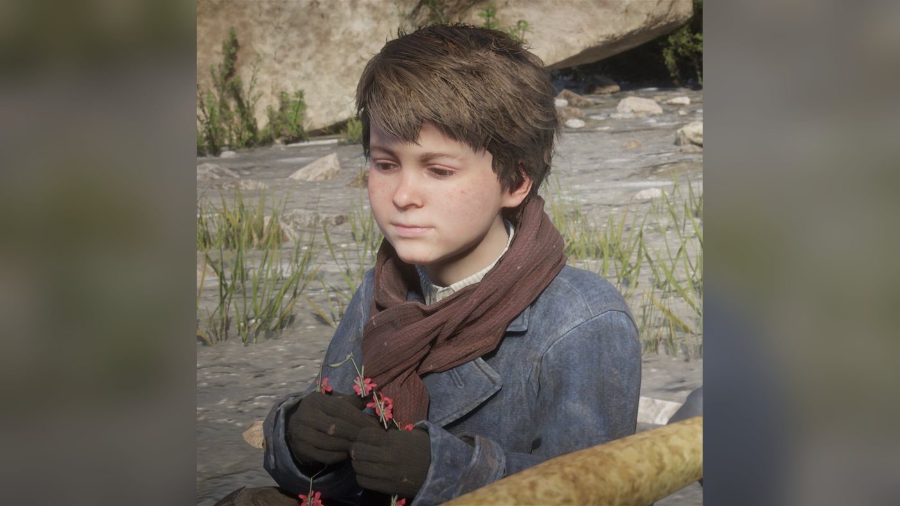
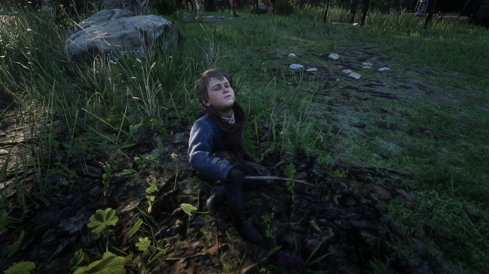
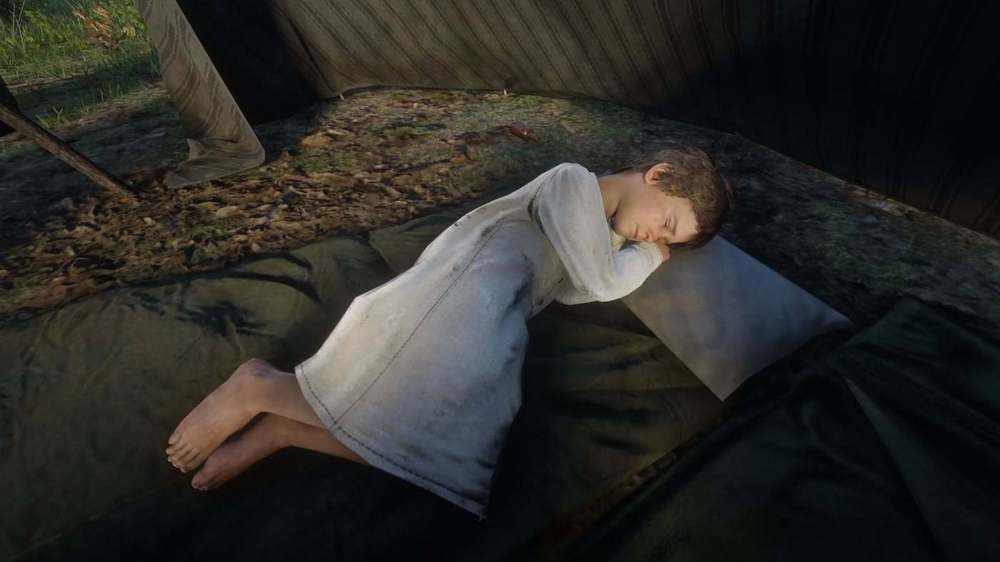
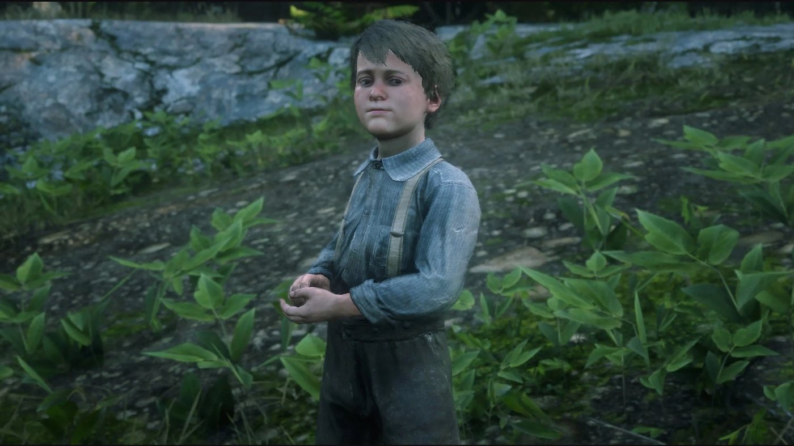
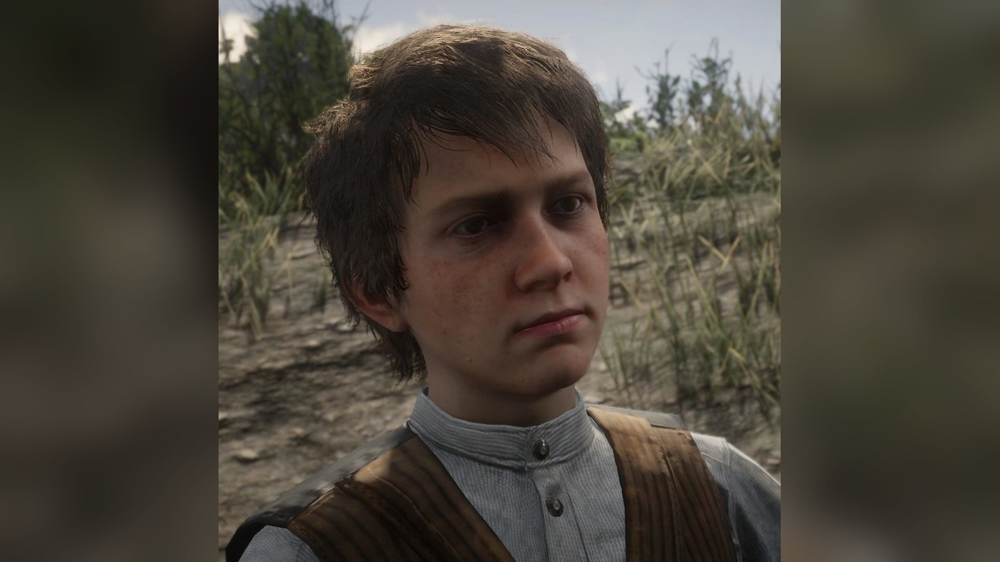
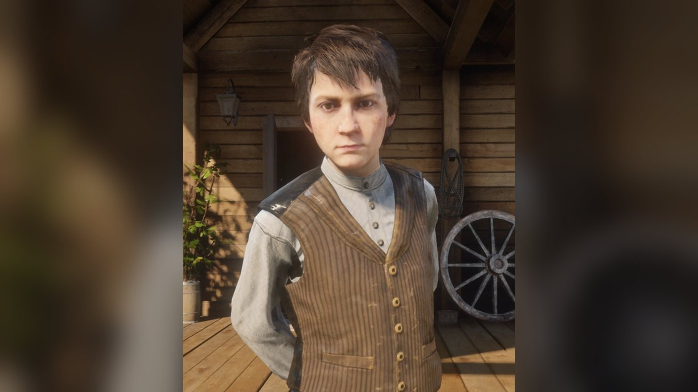
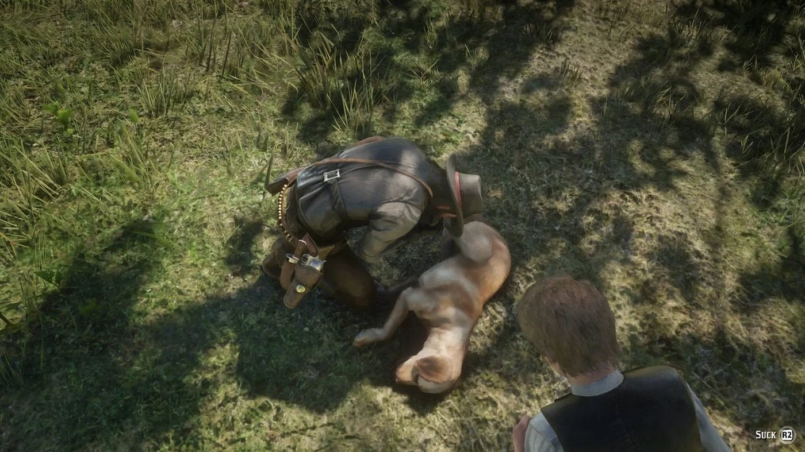
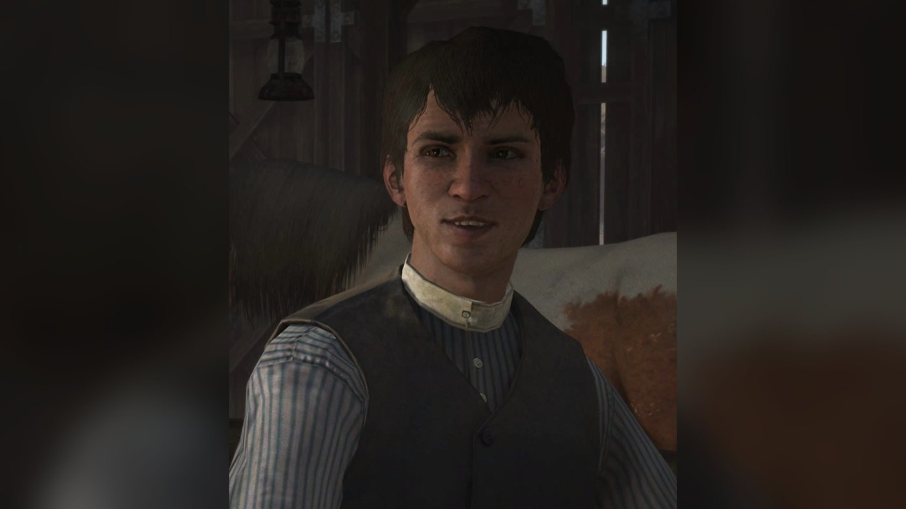
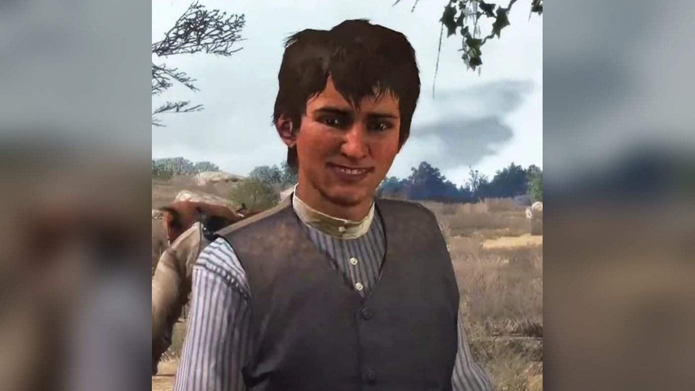
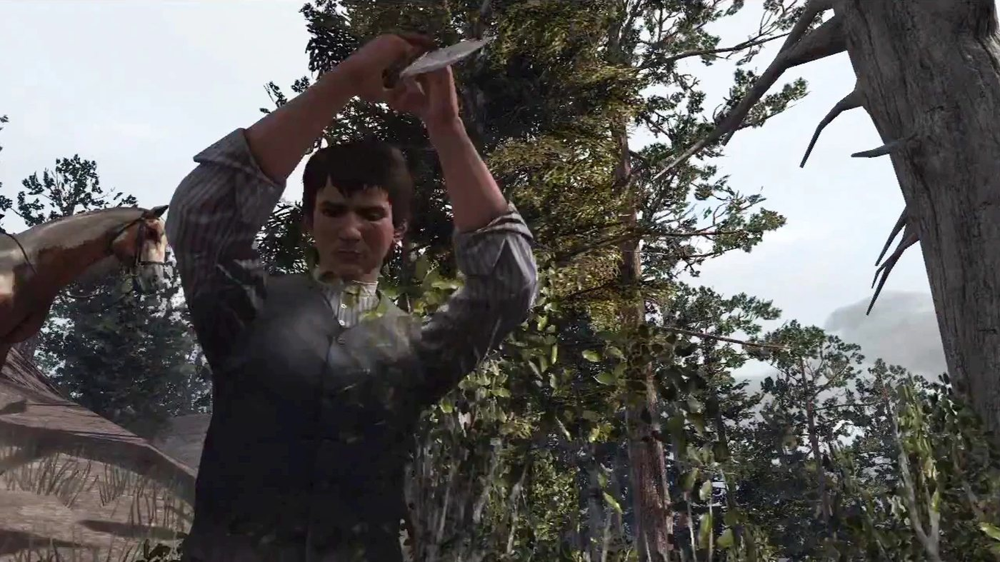
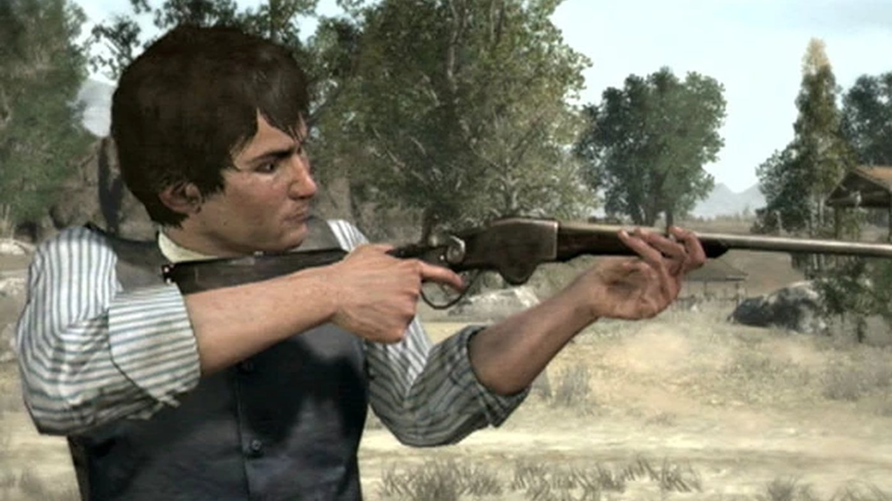
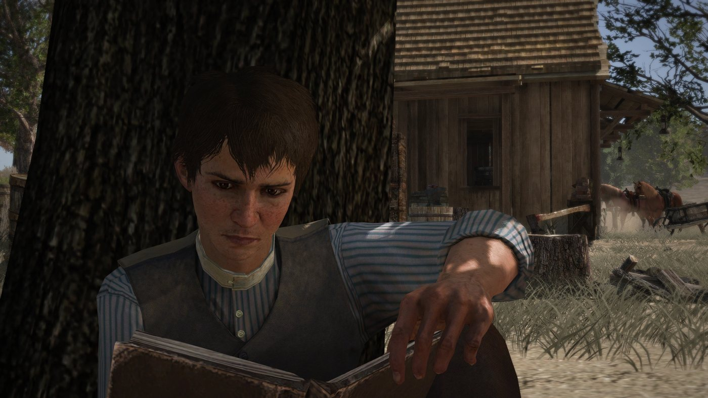
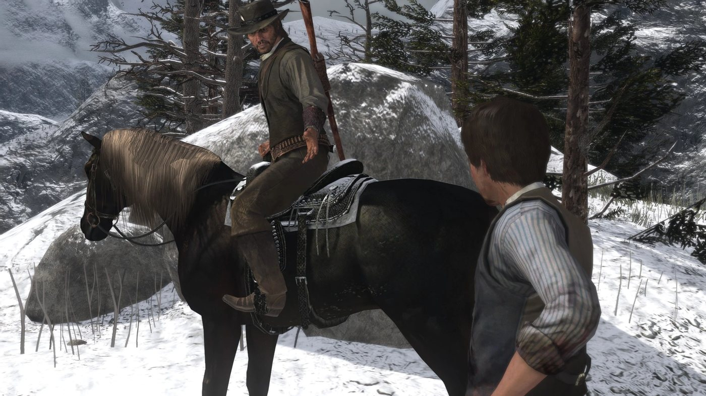
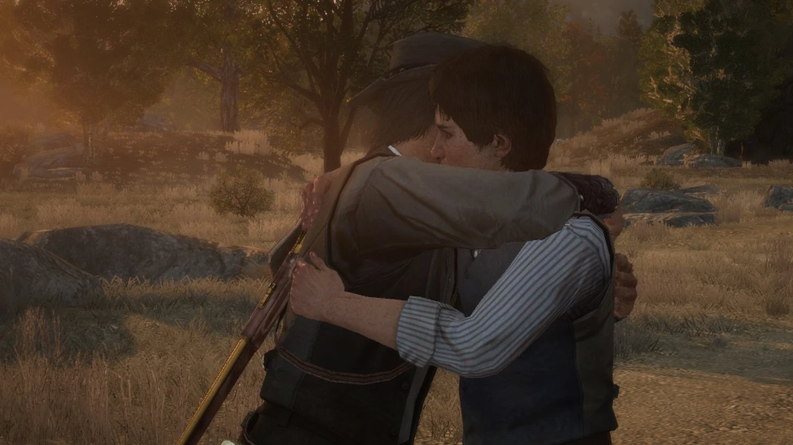
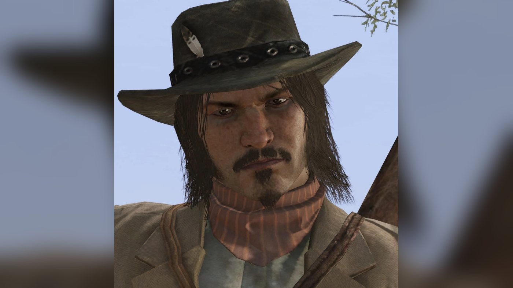
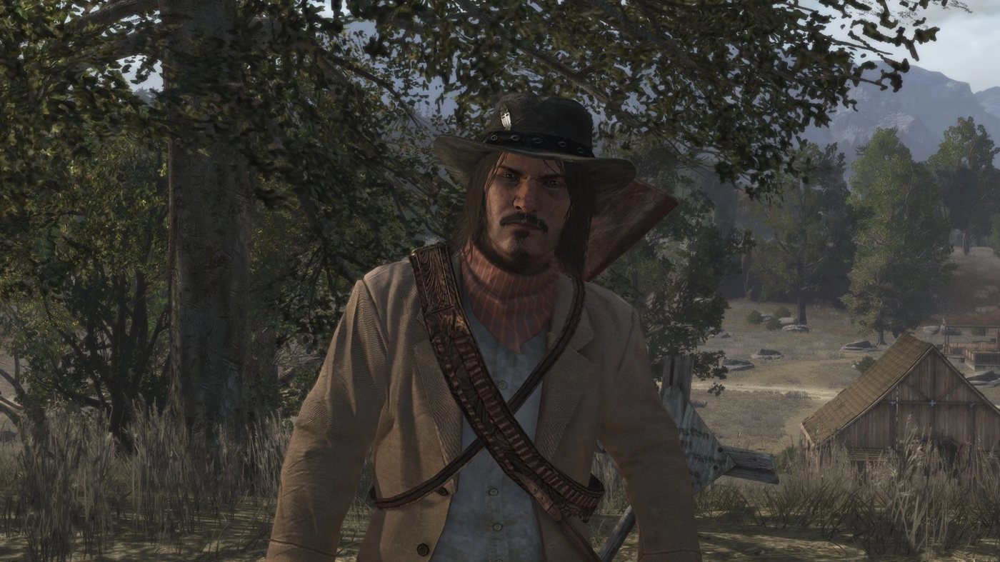
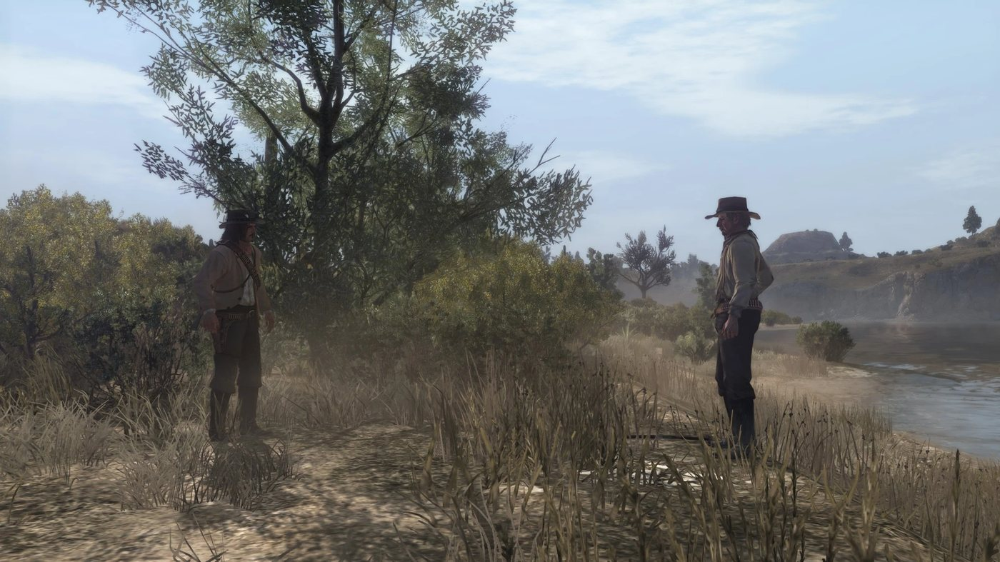
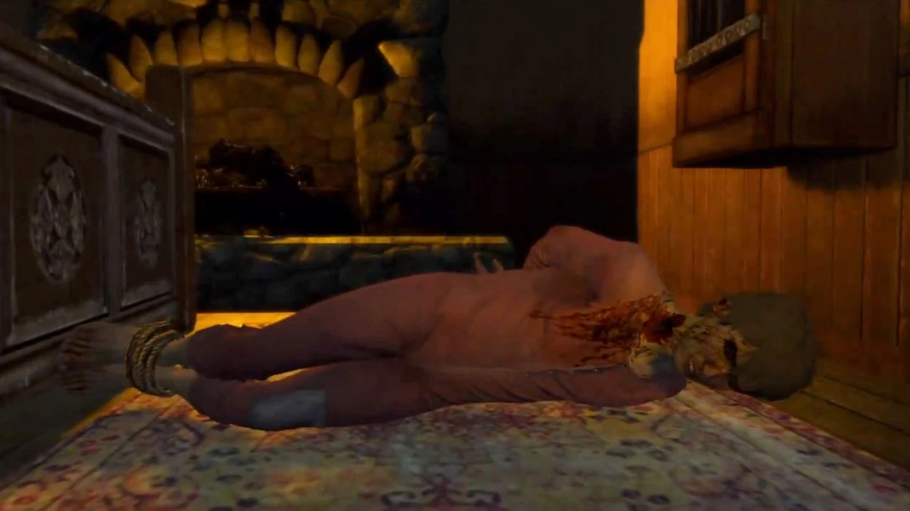